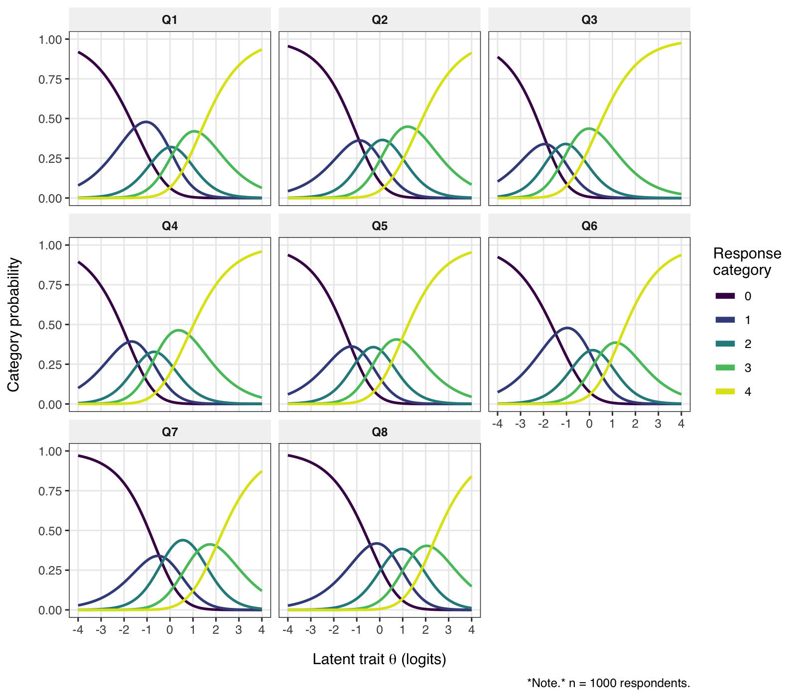
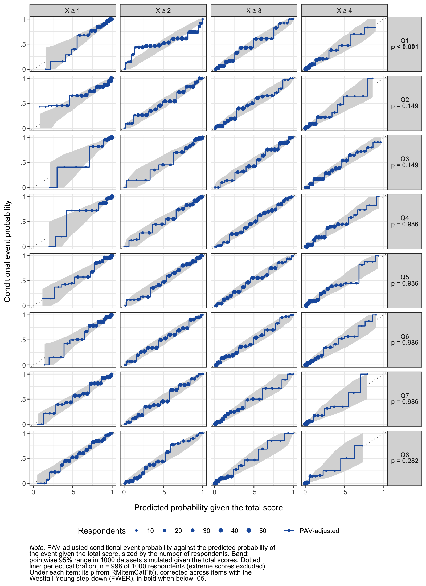
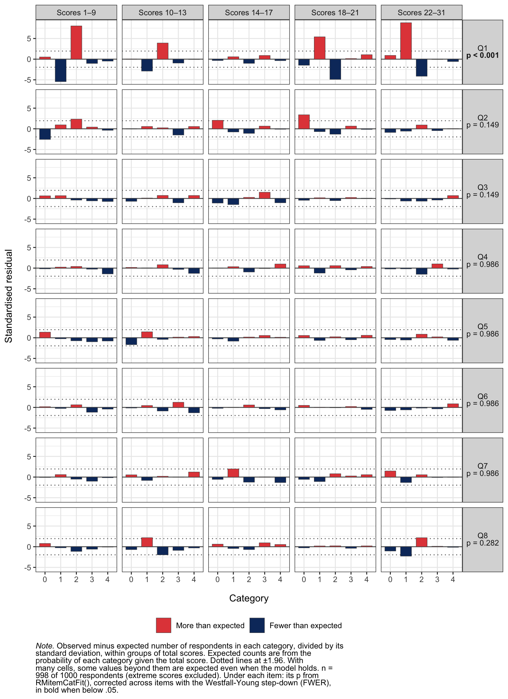
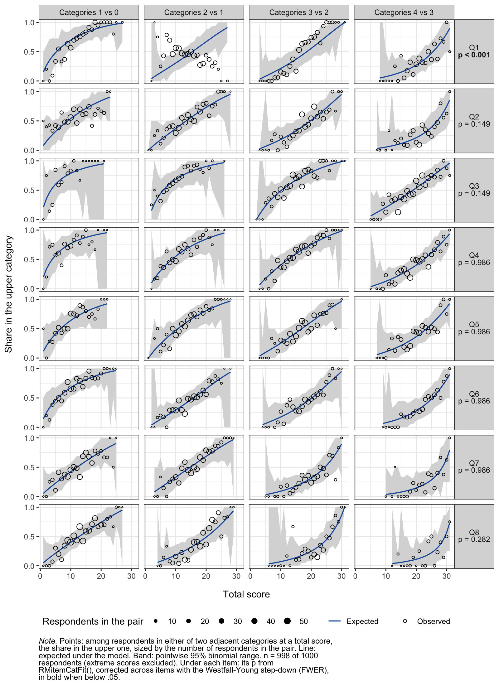
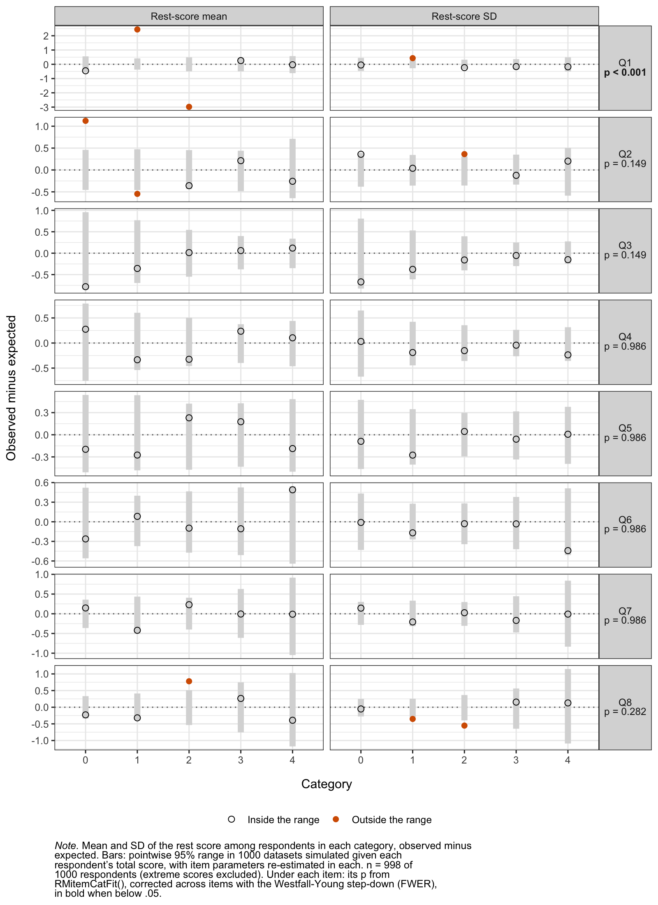
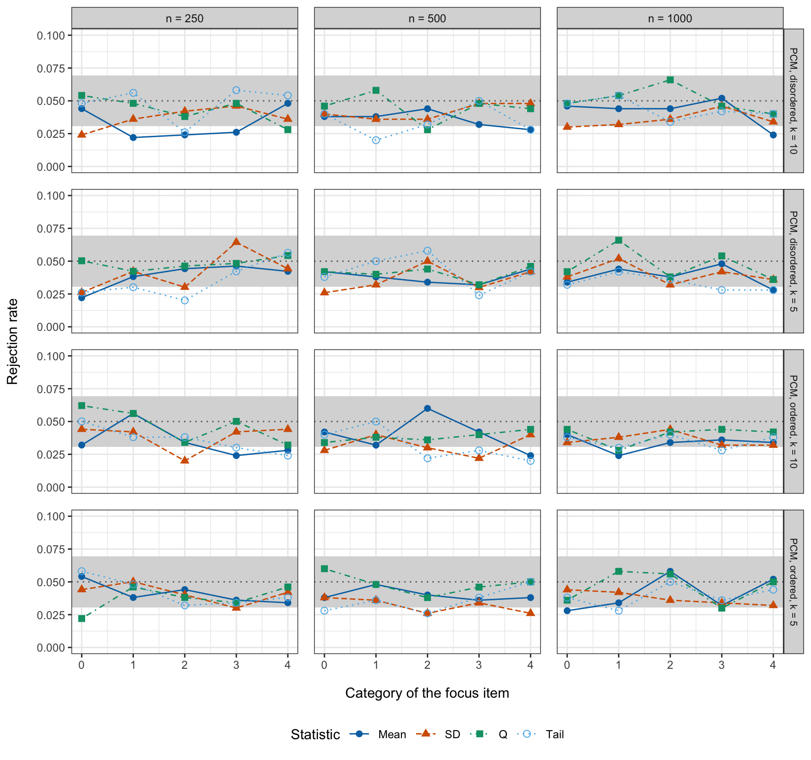
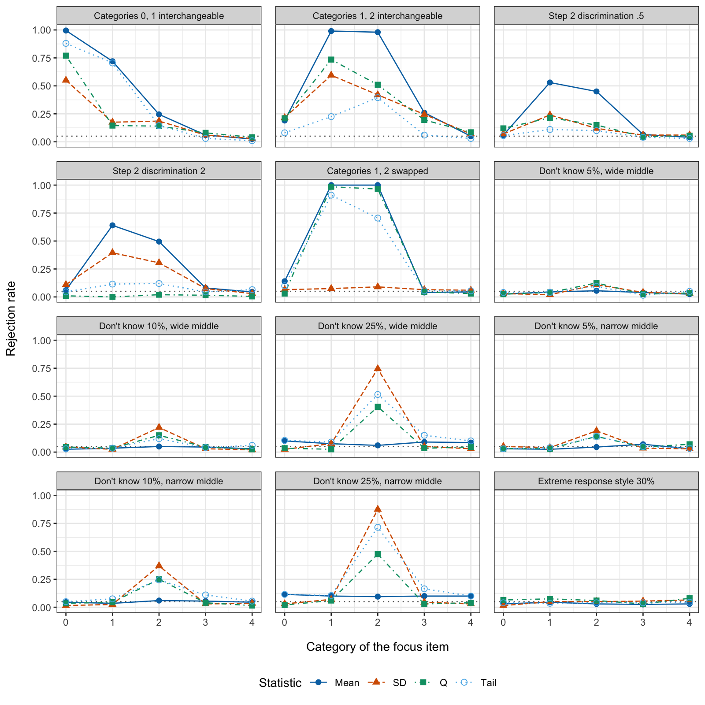
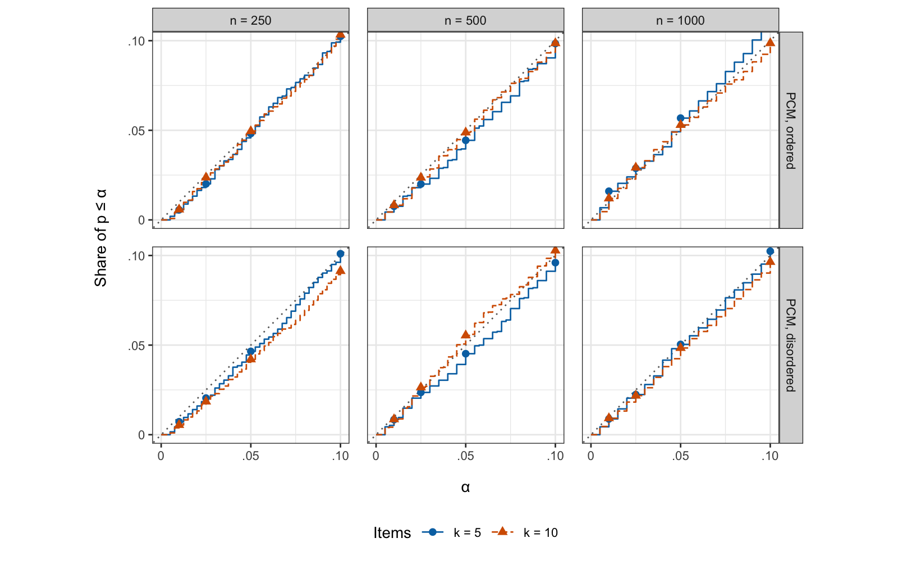
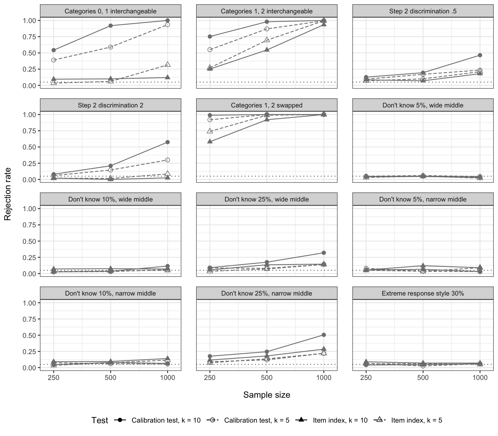
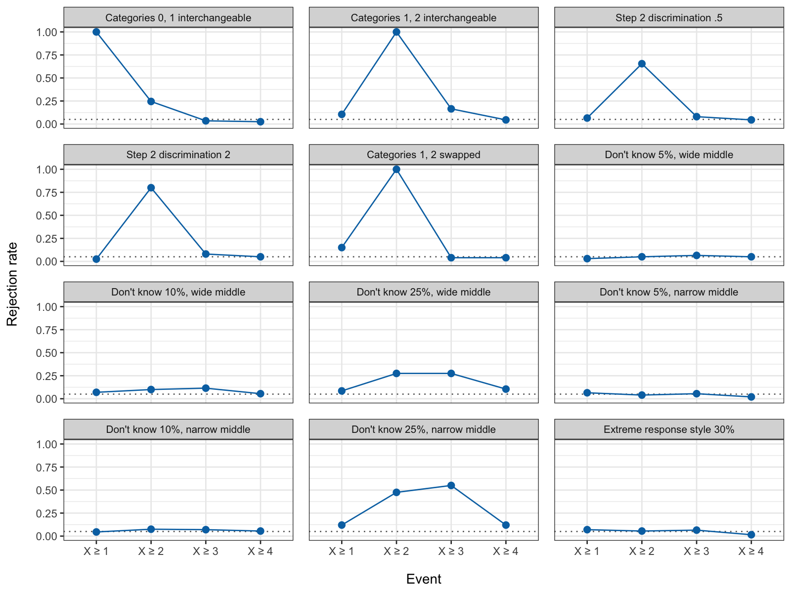

Code
RMitemCatProb(ex)
A test and four plots of category functioning given the total score, with RMitemCatFit() and RMitemCatFitPlot()
The categories of a polytomous item are scored 0, 1, …, m and the scores are added. That scoring assumes that each category is a step up from the one below. Several things can make it wrong: two categories that respondents do not distinguish since category labels are too similar or nonexisting, a step that separates respondents much more or less than the others, or a neutral Likert-style middle category used as “don’t know”.
Ordered response category thresholds are one of the basic psychometric criteria summarised by Christensen et al. (2021), and disordered threshold estimates are commonly taken as the signal that a response scale does not work as intended. The debate about what disordered thresholds mean is unresolved (Adams et al., 2012; Andrich, 2013; Anselmi et al., 2026; García-Pérez, 2017; Wetzel & Carstensen, 2014). The PCM itself allows any threshold order, so a disordered estimate is not a departure from the model. And a scale can fail in the ways listed above with ordered thresholds. This chapter studies a test of the scoring that does not depend on the threshold order, and plots that show where an item departs. Both are in easyRasch2: RMitemCatFit() for the test and RMitemCatFitPlot() for the plots.
Under the PCM the total score \(r\) is sufficient for the person location. Given \(r\), the probability that a respondent chose category \(j\) of item \(i\) depends only on the item parameters:
\[P(X_i = j \mid r) = \frac{\varepsilon_{ij}\,\gamma^{(i)}_{r-j}}{\gamma_r},\]
where \(\varepsilon_{ij}\) is the category parameter and \(\gamma_r\) and \(\gamma^{(i)}_{r-j}\) are elementary symmetric functions of all items and of all items except \(i\). The table of items and categories by total score therefore has expected counts that involve no person parameters. This table is the basis of Glas’s tests for the Rasch model (Glas, 1988) and the PCM (Glas & Verhelst, 1989). The item parameters are estimated by conditional maximum likelihood (CML), so the comparison is not affected by error in person estimates.
Summed over the total scores, the expected count of each category equals the observed count, because the category counts are sufficient for the CML estimates. A plain comparison of observed and expected category frequencies therefore shows nothing. Differences appear only when respondents are split by total score, which both the test and the plots do.
For each item and each category \(k \ge 1\), the event \(X_i \ge k\) has the predicted probability \(p = P(X_i \ge k \mid r)\). If the categories work as scored, the observed share of respondents with \(X_i \ge k\) follows \(p\) across the score range. If two categories are not distinguished or are used in the wrong order, the event at the step between them depends less on the total score than predicted.
The observed events are compared with \(p\) by the pool-adjacent-violators (PAV) algorithm, which gives the best non-decreasing fit of the observed events to \(p\), the conditional event probability (CEP). A plot of the CEP against \(p\) is a PAV-adjusted reliability diagram (Dimitriadis et al., 2021), the calibration plot recommended for ordinal outcomes by Säilynoja et al. (2025). Here the prediction comes from the total score instead of a person estimate. Because CML reproduces each category’s count, the curve cannot lie above or below the diagonal overall. It can only cross it. A curve flatter than the diagonal means that the event separates respondents less well than predicted, and a steeper one that it separates them better.
The statistic for each event is the miscalibration component of the Brier score in the CORP decomposition (Dimitriadis et al., 2021):
\[\text{MCB} = \frac{1}{n}\sum_v (p_v - y_v)^2 - \frac{1}{n}\sum_v (\hat c_v - y_v)^2,\]
where \(y_v\) is 1 when respondent \(v\) scored \(k\) or higher and \(\hat c_v\) is the CEP. MCB is zero when the curve lies on the diagonal and grows with its distance from it. Respondents with the lowest or highest possible total score are left out, since their responses are fixed by the score.
The reference distribution is simulated given each respondent’s observed total score. Response patterns are drawn from \(P(\mathbf{x} \mid r)\) at the CML estimates, so no person location is drawn, and the item parameters are re-estimated in every simulated dataset. The fit of the prediction to the same data is therefore part of the reference distribution. Simulated datasets with an empty category in some item cannot be refitted and are dropped.
For each event, p is the share of the observed MCB and the \(B\) simulated ones that lie at or above the observed value. The events of an item are combined by a studentised maximum: each event’s MCB is centred and scaled by the mean and SD of the observed and simulated values together, and the item statistic is the largest of the item’s values. The item p is the share of the observed and simulated item statistics at or above the observed one, so the smallest attainable p is \(1/(B + 1)\). Across items, the Westfall-Young step-down on the item statistics gives p-values corrected for the family-wise error rate (Ge et al., 2003). RMitemCatFit() uses this correction by default and offers the false discovery rate corrections of Benjamini & Hochberg (1995) as alternatives.
The example has 1000 simulated respondents and 8 items with five categories (0 to 4). Items Q3 to Q8 follow the PCM. Q1 follows the PCM with ordered thresholds, but categories 1 and 2 are swapped, as when the second and third response options are in the wrong order. In Q2, categories 0 and 1 are interchangeable: the first step does not depend on the person location.
The usual first look at the response categories is a plot of the category probability curves against the person location (Figure 3.1). In these data the threshold estimates of every item are ordered, Q1 at (-1.55, -.06, .26, 1.31) and Q2 at (-.90, -.37, .42, 1.62), and the curves of Q1 and Q2 look like those of the PCM items. Nothing in this plot shows that two of the items do not work as scored.
RMitemCatProb(ex)
fit <- RMitemCatFit(ex, seed = 1, output = "list")The test table has one row per item with the p for each event, the item p and the item p corrected across items (Table 3.1 in the appendix). For Q1 the item p is the smallest attainable with 1000 simulated datasets (p < .001, corrected p < .001), and its event \(X \ge 2\), the step between the swapped categories, has p < .001. For Q2, p = .027 and corrected p = .149, with p = .006 for \(X \ge 1\), the step between the interchangeable categories. For the PCM item Q3, p = .022 and corrected p = .149. With eight items, an item p near .02 for some item is not unusual when the model holds, which is what the correction accounts for. In these data the correction leaves Q2’s departure undetected as well.
The calibration plot (Figure 3.2) shows each item’s corrected p under its label when the result of RMitemCatFit() is passed as fit, so the simulations are not repeated.
RMitemCatFitPlot(ex, type = "calibration", fit = fit)
For Q1 the curve for \(X \ge 2\) is much flatter than the diagonal, and 58% of its points lie outside the band. For Q2 it is the curve for \(X \ge 1\) that is flatter (30% of the points outside). For the six PCM items, 0% to 10% of the points per event lie outside. The band is pointwise, so with many points some fall outside it when the model holds, and the plot shows where to look rather than whether an item fits.
RMitemCatFitPlot(ex, type = "residuals", fit = fit)
The residual plot (Figure 3.3) splits the respondents into groups of total scores. For Q1, category 2 is chosen more often than expected in the low score groups and category 1 in the high groups, with 8 of 25 residuals beyond ±1.96, against 0 to 4 per PCM item.
RMitemCatFitPlot(ex, type = "adjacent", fit = fit)
Under the PCM, the share in the upper of two adjacent categories rises with the total score (Figure 3.4). For Q1 the share in category 2 among respondents in categories 1 or 2 falls instead. For Q2 the share in category 1 among respondents in 0 or 1 rises with the score, but at about 51% of the expected slope.
RMitemCatFitPlot(ex, type = "restscore", fit = fit)
The rest-score plot (Figure 3.5) compares the rest score (total score minus the item’s score) of the respondents in each category with its expected value. These are the statistics studied in Section 3.4.3. For Q1, 3 of the 10 statistics lie outside their range. The plot is most useful for “don’t know” use, which shows as a wider spread of the rest score in the middle category (Section 3.4.3).
Data. \(\theta \sim N(0, 1)\). One focus item (item 1) and \(k - 1\) other items, each with five categories scored 0 to 4. The other items follow the PCM, with locations spread evenly over \([-1, 1]\), thresholds \((-1.5, -0.5, 0.5, 1.5)\) around the location and a fixed jitter (SD 0.2). Sample sizes n = 250, 500 and 1000, with k = 5 or 10 items.
Conditions for the focus item (location 0).
Tests. Two sets of tests used the same conditions on separate datasets. The first is a set of per-category statistics, each tested against the same simulated reference distribution as RMitemCatFit(): for each category \(j\) of the focus item, the mean and SD of the rest score among respondents in that category, the number of them with a total score in the lowest or highest 10% (tail), each as observed minus expected, and \(Q_j\), the sum over score levels of the squared standardised deviations for that category. The item index is the sum of \(Q_j\) over \(j \ge 1\). As comparisons, a Wald test of threshold order flags an item when any adjacent pair of threshold estimates is disordered with \(z < -1.645\), using the CML covariance matrix. The second is the calibration test of Section 3.2.3, for every item.
Replication. Datasets with the PCM true: 500 per cell with \(B = 199\). Other conditions: 200 per cell with \(B = 99\). The Monte Carlo SE of a rate of .05 is .010 and .015. The condition with the highest family-wise rate was run again with \(B = 999\) and 1000 new datasets per cell. A dataset with an empty category in the observed data was skipped, and one in which no simulated dataset could be refitted was left out of the rates (Table 3.2).
With the PCM true and ordered thresholds, the Wald test never flagged disorder. With the disordered thresholds, which the PCM fits, it flagged 69% to 100% of datasets. In the conditions in which the scale does not work as scored, the estimates stayed ordered. With categories 1 and 2 swapped, the mean threshold estimates of steps 2 and 3 at n = 1000 and k = 10 were -.07 and .20, ordered but close (Table 3.3). For swapped and interchangeable categories, the Wald test flagged at most 1.5% of datasets. “Don’t know” use at 10% or 25% on the narrow middle removed the disorder: the Wald test then flagged at most 1%. In these data, disordered threshold estimates were neither necessary nor sufficient for a response scale that does not work as scored.
rej |>
filter(null) |>
mutate(row = paste0(lab(cond), ", k = ", k)) |>
ggplot(aes(category, rate, colour = stat, shape = stat, linetype = stat)) +
annotate("rect", xmin = -Inf, xmax = Inf, ymin = .05 - 2 * .0097,
ymax = .05 + 2 * .0097, fill = "grey85") +
geom_hline(yintercept = .05, colour = "grey40", linetype = "dotted") +
geom_line() + geom_point(size = 2) +
facet_grid(row ~ factor(paste("n =", n), levels = paste("n =", c(250, 500, 1000)))) +
scale_stat +
scale_y_continuous(limits = c(0, .1)) +
labs(x = "Category of the focus item", y = "Rejection rate") +
theme(strip.text.y = element_text(size = 7))
With the PCM true, each of the 20 per-category statistics and the item index rejected in .020 to .066 of datasets per cell, a little under .05 on average (Figure 3.6). The same held with disordered thresholds.
rej |>
filter(!null, n == 500, k == 10) |>
ggplot(aes(category, rate, colour = stat, shape = stat, linetype = stat)) +
geom_hline(yintercept = .05, colour = "grey40", linetype = "dotted") +
geom_line() + geom_point(size = 2) +
facet_wrap(~ lab(cond), ncol = 3) +
scale_stat +
scale_y_continuous(limits = c(0, 1)) +
labs(x = "Category of the focus item", y = "Rejection rate") +
theme(strip.text = element_text(size = 7.5))
Each kind of departure showed in a particular statistic (Figure 3.7).
The item index, the sum of the \(Q_j\), was weak for several of these departures: 4% to 32% for categories 0 and 1 interchangeable and 0% to 8% for a step that discriminated twice as strongly (Table 3.4). Each per-category statistic is calibrated on its own, but a reader who looks at all 20 and acts on any p < .05 would reject in about half of the datasets when the PCM holds. The per-category statistics therefore describe a departure once it is found, which is how RMitemCatFitPlot(type = "restscore") shows them, and the calibration test serves as the single test per item.
a_grid <- seq(0, .1, by = .0025)
pal_k <- c("k = 5" = "#0072B2", "k = 10" = "#D55E00")
cal_items |>
filter(null) |>
group_by(cond, n, k) |>
reframe(a = a_grid, rate = ecdf(p)(a_grid)) |>
mutate(k = factor(paste("k =", k), levels = names(pal_k)),
n = factor(paste("n =", n), levels = paste("n =", c(250, 500, 1000)))) |>
ggplot(aes(a, rate, colour = k, linetype = k, shape = k)) +
geom_abline(slope = 1, intercept = 0, colour = "grey40", linetype = "dotted") +
geom_step() +
geom_point(data = \(d) filter(d, round(a, 4) %in% c(.01, .025, .05, .1)),
size = 2) +
facet_grid(lab(cond) ~ n) +
scale_colour_manual("Items", values = pal_k) +
scale_linetype_manual("Items", values = c("solid", "42")) +
scale_shape_manual("Items", values = c(16, 17)) +
scale_x_continuous(breaks = c(0, .05, .1), labels = c("0", ".05", ".10")) +
scale_y_continuous(breaks = c(0, .05, .1), labels = c("0", ".05", ".10")) +
coord_equal(xlim = c(0, .1), ylim = c(0, .1)) +
labs(x = "α", y = "Share of p ≤ α")
The item p was close to uniform in its lower tail (Figure 3.8). Over all items it rejected at .05 in .044 of items at k = 5 and .046 at k = 10, between .039 and .051 per cell, and at .01 between .004 and .007 per cell. At B = 199 the item p rejects slightly less often than nominal at .01, because only a few p-values below .01 are attainable. The p of each single event rejected at .05 in .020 to .060 of datasets per cell.
With the correction across items, at least one item was flagged in .030 to .074 of datasets per cell (Table 3.5). The highest rate, .074, was in the PCM, ordered condition at n = 1000 and k = 5, and every other cell was at or below .048. With \(B = 999\) and 1000 new datasets, the family-wise rate at n = 1000 and k = 5 was .052 with ordered and .045 with disordered thresholds (Monte Carlo SE .007), and the item p rejected at .05 in .052 and .048 of items. The first 199 simulated datasets of the same runs gave family-wise rates of .043 and .045, so the smaller B did not raise the rate, and the .074 is most likely chance.
pal_test <- c("Calibration test" = "#0072B2", "Item index" = "#D55E00")
pow |>
mutate(test = paste0(test, ", k = ", k)) |>
ggplot(aes(n, rate, colour = test, shape = test, linetype = test)) +
geom_hline(yintercept = .05, colour = "grey40", linetype = "dotted") +
geom_line() + geom_point(size = 2) +
facet_wrap(~ lab(cond), ncol = 3) +
scale_colour_manual("Test", values = rep(pal_test, each = 2)) +
scale_shape_manual("Test", values = c(16, 1, 17, 2)) +
scale_linetype_manual("Test", values = c("solid", "42", "solid", "42")) +
scale_x_continuous(breaks = c(250, 500, 1000), trans = "log10",
expand = expansion(mult = .12)) +
scale_y_continuous(limits = c(0, 1)) +
labs(x = "Sample size", y = "Rejection rate") +
guides(colour = guide_legend(nrow = 2)) +
theme(strip.text = element_text(size = 7.5),
panel.spacing.x = unit(1.2, "lines"))
In every cell where either test rejected in more than 20% of datasets, the calibration test rejected at least as often as the item index (Figure 3.9). The largest differences:
Both tests rarely detected “don’t know” use at 5 or 10% (at most 12% for the calibration test), and the calibration test did not detect the extreme response style (2% to 6%).
After the correction across the k items, the focus item was flagged in 84% to 100% of datasets with swapped categories, 22% to 97% with categories 0 and 1 interchangeable and 36% to 100% with categories 1 and 2 interchangeable (Table 3.6). Compared with the rate before the correction, this keeps 50% to 100% of the rejections for these three conditions and 24% to 42% for the weaker departures, in the cells where the test rejected in more than 20% of datasets before the correction. For example, step 2 discrimination 2 at n = 1000 and k = 10 went from 57% to 24%. When the focus item departed from the PCM, at least one of the other items was flagged after the correction in at most 8% of datasets per cell.
cal_ok |>
filter(!null, n == 1000, k == 10) |>
group_by(cond) |>
summarise(across(all_of(paste0("p_raw_", 1:4)), ~ mean(.x < alpha)), .groups = "drop") |>
pivot_longer(all_of(paste0("p_raw_", 1:4)), names_to = "event", names_prefix = "p_raw_",
values_to = "rate") |>
mutate(event = paste0("X ≥ ", event)) |>
ggplot(aes(event, rate, group = 1)) +
geom_hline(yintercept = .05, colour = "grey40", linetype = "dotted") +
geom_line(colour = "#0072B2") +
geom_point(colour = "#0072B2", size = 2) +
facet_wrap(~ lab(cond), ncol = 3) +
scale_y_continuous(limits = c(0, 1)) +
labs(x = "Event", y = "Rejection rate") +
theme(strip.text = element_text(size = 7.5))
The event that rejects points to the step concerned (Figure 3.10). Interchangeable categories 0 and 1 were found through \(X \ge 1\), swapped or interchangeable categories 1 and 2 and a step 2 that discriminated too much or too little through \(X \ge 2\), and “don’t know” use in the middle category through \(X \ge 2\) and \(X \ge 3\).
The categories of an item can fail to work as scored while the threshold estimates are ordered, and the estimates can be disordered while the PCM fits. A test of the scoring therefore needs to compare the responses with the model, not inspect the threshold order. RMitemCatFit() does this with one p-value per item that held its level when the PCM was true, also with disordered thresholds, and detected swapped and interchangeable categories and steps that discriminate differently from the others. With its default correction across items, the family-wise rate stayed close to .05.
RMitemCatFitPlot() shows where an item departs. The calibration plot points to the step concerned, the residual and adjacent-category plots show which categories are used by respondents with too low or too high scores, and the rest-score plot shows the mean and spread of the rest score in each category, the most sensitive view of “don’t know” use.
Use and limits:
RMitemCatFitPlot() are pointwise, a guide to where to look and not a test.The scripts are in scripts/category-fit/ and are run from the book root. They use their own implementation of the conditional probabilities and the sampler (functions.R, study_functions.R, calibration_functions.R), with psychotools for the CML estimates. The results the chapter reads are in results/category-fit/. The per-cell files with one result per dataset are not kept.
run_study.R, 2 h 16 min on 10 cores. summarise.R writes summary.rds. The run computed the elementary symmetric functions by FFT convolution, and functions.R now uses direct polynomial multiplication, which is exact. In 60 datasets the difference moved \(Q_j\) by at most 0.007 and the other statistics by at most 0.0001.run_calibration_study.R, about 6 h on 4 cores. summarise_calibration.R writes calibration_summary.rds, and compare_combination.R computes the item p-values and the correction across items from the stored simulated MCB values (compare_combination.rds, about 20 s).run_calibration_B999.R, 81 min on 10 cores. summarise_calibration_B999.R writes calibration_b999_summary.rds.Seeds are fixed per cell, and the random-number streams depend on the number of cores, so a run with another number of cores gives other datasets.
fp <- easyRasch2:::.format_p_table
tb |>
transmute(Item = item,
`X ≥ 1` = fp(p_1), `X ≥ 2` = fp(p_2),
`X ≥ 3` = fp(p_3), `X ≥ 4` = fp(p_4),
`Item p` = fp(p), `Corrected p` = fp(padj)) |>
kable()| Item | X ≥ 1 | X ≥ 2 | X ≥ 3 | X ≥ 4 | Item p | Corrected p |
|---|---|---|---|---|---|---|
| Q1 | 0.5415 | 0.0010 | 0.0160 | 0.3277 | 0.0010 | 0.0010 |
| Q2 | 0.0060 | 0.2128 | 0.3067 | 0.3077 | 0.0270 | 0.1489 |
| Q3 | 0.0060 | 0.7582 | 0.5944 | 0.6563 | 0.0220 | 0.1489 |
| Q4 | 0.2378 | 0.8741 | 0.9620 | 0.3636 | 0.6673 | 0.9860 |
| Q5 | 0.4885 | 0.7253 | 0.9221 | 0.2388 | 0.6523 | 0.9860 |
| Q6 | 0.6314 | 0.8711 | 0.9640 | 0.9660 | 0.9810 | 0.9860 |
| Q7 | 0.4006 | 0.5055 | 0.7682 | 0.7832 | 0.8412 | 0.9860 |
| Q8 | 0.6663 | 0.0150 | 0.5874 | 0.3936 | 0.0639 | 0.2817 |
d |>
group_by(Cell = cell) |>
summarise(Datasets = n(),
Skipped = sum(!is.na(skipped)),
`No simulated dataset kept` = sum(is.na(skipped) & B_used == 0),
`Kept < 90% of B` = sum(evaluable & B_used / B < .9),
.groups = "drop") |>
kable()| Cell | Datasets | Skipped | No simulated dataset kept | Kept < 90% of B |
|---|---|---|---|---|
| n = 1000, k = 10 | 3400 | 0 | 0 | 0 |
| n = 1000, k = 5 | 3400 | 0 | 0 | 0 |
| n = 250, k = 10 | 3400 | 14 | 0 | 372 |
| n = 250, k = 5 | 3400 | 2 | 8 | 218 |
| n = 500, k = 10 | 3400 | 0 | 0 | 7 |
| n = 500, k = 5 | 3400 | 0 | 0 | 3 |
ok |>
filter(n == 1000, k == 10) |>
group_by(Condition = lab(cond)) |>
summarise(across(t1:t4, mean), `Wald, disorder` = mean(disorder_any)) |>
kable(digits = 2)| Condition | t1 | t2 | t3 | t4 | Wald, disorder |
|---|---|---|---|---|---|
| PCM, ordered | -1.57 | -0.58 | 0.44 | 1.44 | 0.00 |
| PCM, disordered | -1.57 | 0.33 | -0.47 | 1.44 | 1.00 |
| Categories 0, 1 interchangeable | -0.74 | -0.48 | 0.44 | 1.39 | 0.00 |
| Categories 1, 2 interchangeable | -1.75 | -0.29 | 0.59 | 1.45 | 0.00 |
| Step 2 discrimination .5 | -1.65 | -0.45 | 0.49 | 1.44 | 0.00 |
| Step 2 discrimination 2 | -1.49 | -0.72 | 0.37 | 1.43 | 0.00 |
| Categories 1, 2 swapped | -1.71 | -0.07 | 0.20 | 1.39 | 0.00 |
| Don’t know 5%, wide middle | -1.58 | -0.73 | 0.59 | 1.44 | 0.00 |
| Don’t know 10%, wide middle | -1.60 | -0.90 | 0.77 | 1.45 | 0.00 |
| Don’t know 25%, wide middle | -1.63 | -1.34 | 1.21 | 1.48 | 0.00 |
| Don’t know 5%, narrow middle | -1.60 | 0.02 | -0.15 | 1.44 | 0.22 |
| Don’t know 10%, narrow middle | -1.59 | -0.24 | 0.10 | 1.44 | 0.00 |
| Don’t know 25%, narrow middle | -1.62 | -0.89 | 0.74 | 1.49 | 0.00 |
| Extreme response style 30% | -1.20 | -0.47 | 0.33 | 1.06 | 0.00 |
cal_items |>
filter(item == 1) |>
group_by(cond, n, k) |>
summarise(`Item p` = mean(p < alpha), .groups = "drop") |>
left_join(cal_ok |>
group_by(cond, n, k) |>
summarise(`X ≥ 1` = mean(p_raw_1 < alpha), `X ≥ 2` = mean(p_raw_2 < alpha),
`X ≥ 3` = mean(p_raw_3 < alpha), `X ≥ 4` = mean(p_raw_4 < alpha),
.groups = "drop"),
by = c("cond", "n", "k")) |>
left_join(select(idx, cond, n, k, `Item index` = index, `Wald` = wald),
by = c("cond", "n", "k")) |>
mutate(Condition = lab(cond), Cell = sprintf("n = %d, k = %d", n, k)) |>
arrange(Condition, k, n) |>
select(Condition, Cell, `Item p`, starts_with("X"), `Item index`, Wald) |>
kable(digits = 2)| Condition | Cell | Item p | X ≥ 1 | X ≥ 2 | X ≥ 3 | X ≥ 4 | Item index | Wald |
|---|---|---|---|---|---|---|---|---|
| PCM, ordered | n = 250, k = 5 | 0.04 | 0.04 | 0.04 | 0.05 | 0.05 | 0.04 | 0.00 |
| PCM, ordered | n = 500, k = 5 | 0.04 | 0.04 | 0.03 | 0.06 | 0.04 | 0.04 | 0.00 |
| PCM, ordered | n = 1000, k = 5 | 0.04 | 0.04 | 0.04 | 0.03 | 0.05 | 0.03 | 0.00 |
| PCM, ordered | n = 250, k = 10 | 0.03 | 0.04 | 0.04 | 0.05 | 0.05 | 0.04 | 0.00 |
| PCM, ordered | n = 500, k = 10 | 0.04 | 0.05 | 0.04 | 0.05 | 0.04 | 0.04 | 0.00 |
| PCM, ordered | n = 1000, k = 10 | 0.05 | 0.04 | 0.05 | 0.04 | 0.03 | 0.04 | 0.00 |
| PCM, disordered | n = 250, k = 5 | 0.03 | 0.05 | 0.04 | 0.03 | 0.04 | 0.06 | 0.73 |
| PCM, disordered | n = 500, k = 5 | 0.04 | 0.05 | 0.05 | 0.03 | 0.04 | 0.04 | 0.92 |
| PCM, disordered | n = 1000, k = 5 | 0.06 | 0.05 | 0.05 | 0.05 | 0.04 | 0.06 | 1.00 |
| PCM, disordered | n = 250, k = 10 | 0.04 | 0.05 | 0.04 | 0.04 | 0.04 | 0.05 | 0.69 |
| PCM, disordered | n = 500, k = 10 | 0.04 | 0.02 | 0.05 | 0.04 | 0.03 | 0.04 | 0.95 |
| PCM, disordered | n = 1000, k = 10 | 0.05 | 0.05 | 0.06 | 0.03 | 0.05 | 0.05 | 1.00 |
| Categories 0, 1 interchangeable | n = 250, k = 5 | 0.39 | 0.58 | 0.06 | 0.06 | 0.03 | 0.04 | 0.01 |
| Categories 0, 1 interchangeable | n = 500, k = 5 | 0.59 | 0.74 | 0.06 | 0.05 | 0.04 | 0.06 | 0.00 |
| Categories 0, 1 interchangeable | n = 1000, k = 5 | 0.94 | 0.98 | 0.20 | 0.04 | 0.04 | 0.32 | 0.00 |
| Categories 0, 1 interchangeable | n = 250, k = 10 | 0.54 | 0.73 | 0.12 | 0.04 | 0.03 | 0.10 | 0.00 |
| Categories 0, 1 interchangeable | n = 500, k = 10 | 0.92 | 0.96 | 0.16 | 0.04 | 0.04 | 0.10 | 0.00 |
| Categories 0, 1 interchangeable | n = 1000, k = 10 | 1.00 | 1.00 | 0.24 | 0.04 | 0.03 | 0.12 | 0.00 |
| Categories 1, 2 interchangeable | n = 250, k = 5 | 0.55 | 0.05 | 0.70 | 0.08 | 0.04 | 0.27 | 0.00 |
| Categories 1, 2 interchangeable | n = 500, k = 5 | 0.87 | 0.04 | 0.96 | 0.06 | 0.03 | 0.70 | 0.00 |
| Categories 1, 2 interchangeable | n = 1000, k = 5 | 1.00 | 0.07 | 1.00 | 0.10 | 0.07 | 1.00 | 0.00 |
| Categories 1, 2 interchangeable | n = 250, k = 10 | 0.75 | 0.07 | 0.91 | 0.08 | 0.03 | 0.25 | 0.00 |
| Categories 1, 2 interchangeable | n = 500, k = 10 | 0.98 | 0.06 | 1.00 | 0.12 | 0.03 | 0.54 | 0.00 |
| Categories 1, 2 interchangeable | n = 1000, k = 10 | 1.00 | 0.10 | 1.00 | 0.16 | 0.04 | 0.94 | 0.00 |
| Step 2 discrimination .5 | n = 250, k = 5 | 0.10 | 0.04 | 0.13 | 0.04 | 0.06 | 0.07 | 0.00 |
| Step 2 discrimination .5 | n = 500, k = 5 | 0.17 | 0.03 | 0.28 | 0.06 | 0.04 | 0.10 | 0.00 |
| Step 2 discrimination .5 | n = 1000, k = 5 | 0.23 | 0.04 | 0.41 | 0.02 | 0.01 | 0.21 | 0.00 |
| Step 2 discrimination .5 | n = 250, k = 10 | 0.13 | 0.04 | 0.21 | 0.05 | 0.02 | 0.09 | 0.00 |
| Step 2 discrimination .5 | n = 500, k = 10 | 0.20 | 0.04 | 0.34 | 0.04 | 0.05 | 0.07 | 0.00 |
| Step 2 discrimination .5 | n = 1000, k = 10 | 0.47 | 0.06 | 0.66 | 0.08 | 0.04 | 0.18 | 0.00 |
| Step 2 discrimination 2 | n = 250, k = 5 | 0.06 | 0.07 | 0.10 | 0.04 | 0.04 | 0.02 | 0.00 |
| Step 2 discrimination 2 | n = 500, k = 5 | 0.14 | 0.06 | 0.23 | 0.04 | 0.06 | 0.01 | 0.00 |
| Step 2 discrimination 2 | n = 1000, k = 5 | 0.30 | 0.06 | 0.53 | 0.04 | 0.03 | 0.09 | 0.00 |
| Step 2 discrimination 2 | n = 250, k = 10 | 0.08 | 0.04 | 0.18 | 0.05 | 0.03 | 0.02 | 0.00 |
| Step 2 discrimination 2 | n = 500, k = 10 | 0.21 | 0.05 | 0.38 | 0.04 | 0.04 | 0.00 | 0.00 |
| Step 2 discrimination 2 | n = 1000, k = 10 | 0.58 | 0.03 | 0.80 | 0.08 | 0.05 | 0.03 | 0.00 |
| Categories 1, 2 swapped | n = 250, k = 5 | 0.92 | 0.10 | 0.98 | 0.04 | 0.04 | 0.74 | 0.00 |
| Categories 1, 2 swapped | n = 500, k = 5 | 1.00 | 0.14 | 1.00 | 0.06 | 0.03 | 0.99 | 0.00 |
| Categories 1, 2 swapped | n = 1000, k = 5 | 1.00 | 0.30 | 1.00 | 0.11 | 0.06 | 1.00 | 0.00 |
| Categories 1, 2 swapped | n = 250, k = 10 | 0.99 | 0.09 | 1.00 | 0.08 | 0.02 | 0.58 | 0.00 |
| Categories 1, 2 swapped | n = 500, k = 10 | 1.00 | 0.11 | 1.00 | 0.04 | 0.03 | 0.92 | 0.00 |
| Categories 1, 2 swapped | n = 1000, k = 10 | 1.00 | 0.15 | 1.00 | 0.04 | 0.04 | 1.00 | 0.00 |
| Don’t know 5%, wide middle | n = 250, k = 5 | 0.05 | 0.04 | 0.06 | 0.07 | 0.06 | 0.03 | 0.00 |
| Don’t know 5%, wide middle | n = 500, k = 5 | 0.06 | 0.04 | 0.06 | 0.06 | 0.04 | 0.05 | 0.00 |
| Don’t know 5%, wide middle | n = 1000, k = 5 | 0.04 | 0.06 | 0.06 | 0.04 | 0.04 | 0.02 | 0.00 |
| Don’t know 5%, wide middle | n = 250, k = 10 | 0.04 | 0.03 | 0.06 | 0.04 | 0.03 | 0.05 | 0.00 |
| Don’t know 5%, wide middle | n = 500, k = 10 | 0.04 | 0.04 | 0.04 | 0.06 | 0.05 | 0.05 | 0.00 |
| Don’t know 5%, wide middle | n = 1000, k = 10 | 0.03 | 0.03 | 0.05 | 0.06 | 0.05 | 0.04 | 0.00 |
| Don’t know 10%, wide middle | n = 250, k = 5 | 0.03 | 0.02 | 0.06 | 0.06 | 0.05 | 0.03 | 0.00 |
| Don’t know 10%, wide middle | n = 500, k = 5 | 0.03 | 0.04 | 0.06 | 0.04 | 0.06 | 0.04 | 0.00 |
| Don’t know 10%, wide middle | n = 1000, k = 5 | 0.06 | 0.04 | 0.10 | 0.08 | 0.03 | 0.05 | 0.00 |
| Don’t know 10%, wide middle | n = 250, k = 10 | 0.03 | 0.03 | 0.05 | 0.05 | 0.03 | 0.07 | 0.00 |
| Don’t know 10%, wide middle | n = 500, k = 10 | 0.04 | 0.03 | 0.09 | 0.04 | 0.06 | 0.07 | 0.00 |
| Don’t know 10%, wide middle | n = 1000, k = 10 | 0.12 | 0.07 | 0.10 | 0.12 | 0.06 | 0.07 | 0.00 |
| Don’t know 25%, wide middle | n = 250, k = 5 | 0.09 | 0.03 | 0.07 | 0.12 | 0.05 | 0.04 | 0.04 |
| Don’t know 25%, wide middle | n = 500, k = 5 | 0.08 | 0.06 | 0.10 | 0.13 | 0.07 | 0.07 | 0.01 |
| Don’t know 25%, wide middle | n = 1000, k = 5 | 0.14 | 0.05 | 0.17 | 0.12 | 0.03 | 0.14 | 0.00 |
| Don’t know 25%, wide middle | n = 250, k = 10 | 0.09 | 0.06 | 0.10 | 0.09 | 0.02 | 0.06 | 0.01 |
| Don’t know 25%, wide middle | n = 500, k = 10 | 0.17 | 0.06 | 0.16 | 0.18 | 0.06 | 0.14 | 0.00 |
| Don’t know 25%, wide middle | n = 1000, k = 10 | 0.32 | 0.09 | 0.28 | 0.28 | 0.10 | 0.14 | 0.00 |
| Don’t know 5%, narrow middle | n = 250, k = 5 | 0.08 | 0.03 | 0.08 | 0.06 | 0.05 | 0.05 | 0.10 |
| Don’t know 5%, narrow middle | n = 500, k = 5 | 0.04 | 0.02 | 0.03 | 0.06 | 0.03 | 0.04 | 0.20 |
| Don’t know 5%, narrow middle | n = 1000, k = 5 | 0.03 | 0.05 | 0.07 | 0.01 | 0.04 | 0.09 | 0.25 |
| Don’t know 5%, narrow middle | n = 250, k = 10 | 0.06 | 0.03 | 0.04 | 0.06 | 0.06 | 0.06 | 0.10 |
| Don’t know 5%, narrow middle | n = 500, k = 10 | 0.06 | 0.10 | 0.06 | 0.06 | 0.05 | 0.12 | 0.21 |
| Don’t know 5%, narrow middle | n = 1000, k = 10 | 0.03 | 0.06 | 0.04 | 0.06 | 0.02 | 0.09 | 0.22 |
| Don’t know 10%, narrow middle | n = 250, k = 5 | 0.07 | 0.04 | 0.06 | 0.06 | 0.04 | 0.04 | 0.01 |
| Don’t know 10%, narrow middle | n = 500, k = 5 | 0.06 | 0.04 | 0.05 | 0.09 | 0.02 | 0.07 | 0.00 |
| Don’t know 10%, narrow middle | n = 1000, k = 5 | 0.06 | 0.04 | 0.06 | 0.07 | 0.04 | 0.12 | 0.00 |
| Don’t know 10%, narrow middle | n = 250, k = 10 | 0.04 | 0.03 | 0.06 | 0.06 | 0.05 | 0.09 | 0.00 |
| Don’t know 10%, narrow middle | n = 500, k = 10 | 0.08 | 0.07 | 0.06 | 0.10 | 0.06 | 0.10 | 0.00 |
| Don’t know 10%, narrow middle | n = 1000, k = 10 | 0.06 | 0.04 | 0.07 | 0.07 | 0.06 | 0.14 | 0.00 |
| Don’t know 25%, narrow middle | n = 250, k = 5 | 0.09 | 0.06 | 0.16 | 0.10 | 0.06 | 0.07 | 0.00 |
| Don’t know 25%, narrow middle | n = 500, k = 5 | 0.12 | 0.06 | 0.16 | 0.14 | 0.06 | 0.14 | 0.00 |
| Don’t know 25%, narrow middle | n = 1000, k = 5 | 0.22 | 0.05 | 0.23 | 0.24 | 0.04 | 0.22 | 0.00 |
| Don’t know 25%, narrow middle | n = 250, k = 10 | 0.18 | 0.07 | 0.18 | 0.15 | 0.04 | 0.12 | 0.00 |
| Don’t know 25%, narrow middle | n = 500, k = 10 | 0.24 | 0.04 | 0.24 | 0.24 | 0.09 | 0.18 | 0.00 |
| Don’t know 25%, narrow middle | n = 1000, k = 10 | 0.50 | 0.12 | 0.48 | 0.55 | 0.12 | 0.28 | 0.00 |
| Extreme response style 30% | n = 250, k = 5 | 0.06 | 0.04 | 0.06 | 0.04 | 0.04 | 0.06 | 0.00 |
| Extreme response style 30% | n = 500, k = 5 | 0.03 | 0.03 | 0.06 | 0.03 | 0.02 | 0.06 | 0.00 |
| Extreme response style 30% | n = 1000, k = 5 | 0.06 | 0.04 | 0.04 | 0.04 | 0.04 | 0.05 | 0.00 |
| Extreme response style 30% | n = 250, k = 10 | 0.04 | 0.04 | 0.04 | 0.05 | 0.07 | 0.09 | 0.00 |
| Extreme response style 30% | n = 500, k = 10 | 0.04 | 0.06 | 0.03 | 0.04 | 0.04 | 0.07 | 0.00 |
| Extreme response style 30% | n = 1000, k = 10 | 0.06 | 0.07 | 0.06 | 0.06 | 0.01 | 0.07 | 0.00 |
null_cell |>
left_join(fwer, by = c("cond", "n", "k")) |>
mutate(Condition = lab(cond), Cell = sprintf("n = %d, k = %d", n, k)) |>
arrange(Condition, k, n) |>
select(Condition, Cell, Datasets = datasets, `Item p < .01` = r01,
`Item p < .05` = r05, `Family-wise rate` = fw) |>
kable(digits = 3)| Condition | Cell | Datasets | Item p < .01 | Item p < .05 | Family-wise rate |
|---|---|---|---|---|---|
| PCM, ordered | n = 250, k = 5 | 498 | 0.004 | 0.046 | 0.036 |
| PCM, ordered | n = 500, k = 5 | 500 | 0.004 | 0.040 | 0.032 |
| PCM, ordered | n = 1000, k = 5 | 500 | 0.007 | 0.049 | 0.074 |
| PCM, ordered | n = 250, k = 10 | 499 | 0.004 | 0.048 | 0.038 |
| PCM, ordered | n = 500, k = 10 | 500 | 0.004 | 0.045 | 0.048 |
| PCM, ordered | n = 1000, k = 10 | 500 | 0.005 | 0.049 | 0.046 |
| PCM, disordered | n = 250, k = 5 | 499 | 0.004 | 0.044 | 0.040 |
| PCM, disordered | n = 500, k = 5 | 500 | 0.005 | 0.039 | 0.042 |
| PCM, disordered | n = 1000, k = 5 | 500 | 0.004 | 0.048 | 0.046 |
| PCM, disordered | n = 250, k = 10 | 497 | 0.004 | 0.040 | 0.030 |
| PCM, disordered | n = 500, k = 10 | 500 | 0.004 | 0.051 | 0.036 |
| PCM, disordered | n = 1000, k = 10 | 500 | 0.005 | 0.042 | 0.030 |
pow |>
filter(test == "Calibration test") |>
select(cond, n, k, Before = rate) |>
left_join(rename(pow_adj, After = adj), by = c("cond", "n", "k")) |>
left_join(rename(other_adj, `Other item flagged` = rate), by = c("cond", "n", "k")) |>
mutate(Condition = lab(cond), Cell = sprintf("n = %d, k = %d", n, k)) |>
arrange(Condition, k, n) |>
select(Condition, Cell, Before, After, `Other item flagged`) |>
kable(digits = 2)| Condition | Cell | Before | After | Other item flagged |
|---|---|---|---|---|
| Categories 0, 1 interchangeable | n = 250, k = 5 | 0.39 | 0.22 | 0.05 |
| Categories 0, 1 interchangeable | n = 500, k = 5 | 0.59 | 0.44 | 0.04 |
| Categories 0, 1 interchangeable | n = 1000, k = 5 | 0.94 | 0.83 | 0.06 |
| Categories 0, 1 interchangeable | n = 250, k = 10 | 0.54 | 0.27 | 0.05 |
| Categories 0, 1 interchangeable | n = 500, k = 10 | 0.92 | 0.73 | 0.04 |
| Categories 0, 1 interchangeable | n = 1000, k = 10 | 1.00 | 0.97 | 0.04 |
| Categories 1, 2 interchangeable | n = 250, k = 5 | 0.55 | 0.36 | 0.04 |
| Categories 1, 2 interchangeable | n = 500, k = 5 | 0.87 | 0.68 | 0.04 |
| Categories 1, 2 interchangeable | n = 1000, k = 5 | 1.00 | 0.98 | 0.04 |
| Categories 1, 2 interchangeable | n = 250, k = 10 | 0.75 | 0.52 | 0.05 |
| Categories 1, 2 interchangeable | n = 500, k = 10 | 0.98 | 0.88 | 0.01 |
| Categories 1, 2 interchangeable | n = 1000, k = 10 | 1.00 | 1.00 | 0.06 |
| Step 2 discrimination .5 | n = 250, k = 5 | 0.10 | 0.02 | 0.04 |
| Step 2 discrimination .5 | n = 500, k = 5 | 0.17 | 0.04 | 0.04 |
| Step 2 discrimination .5 | n = 1000, k = 5 | 0.23 | 0.08 | 0.03 |
| Step 2 discrimination .5 | n = 250, k = 10 | 0.13 | 0.03 | 0.02 |
| Step 2 discrimination .5 | n = 500, k = 10 | 0.20 | 0.04 | 0.03 |
| Step 2 discrimination .5 | n = 1000, k = 10 | 0.47 | 0.14 | 0.04 |
| Step 2 discrimination 2 | n = 250, k = 5 | 0.06 | 0.01 | 0.06 |
| Step 2 discrimination 2 | n = 500, k = 5 | 0.14 | 0.04 | 0.04 |
| Step 2 discrimination 2 | n = 1000, k = 5 | 0.30 | 0.12 | 0.02 |
| Step 2 discrimination 2 | n = 250, k = 10 | 0.08 | 0.02 | 0.03 |
| Step 2 discrimination 2 | n = 500, k = 10 | 0.21 | 0.06 | 0.04 |
| Step 2 discrimination 2 | n = 1000, k = 10 | 0.58 | 0.24 | 0.05 |
| Categories 1, 2 swapped | n = 250, k = 5 | 0.92 | 0.84 | 0.04 |
| Categories 1, 2 swapped | n = 500, k = 5 | 1.00 | 1.00 | 0.05 |
| Categories 1, 2 swapped | n = 1000, k = 5 | 1.00 | 1.00 | 0.07 |
| Categories 1, 2 swapped | n = 250, k = 10 | 0.99 | 0.94 | 0.07 |
| Categories 1, 2 swapped | n = 500, k = 10 | 1.00 | 1.00 | 0.04 |
| Categories 1, 2 swapped | n = 1000, k = 10 | 1.00 | 1.00 | 0.04 |
| Don’t know 5%, wide middle | n = 250, k = 5 | 0.05 | 0.01 | 0.04 |
| Don’t know 5%, wide middle | n = 500, k = 5 | 0.06 | 0.01 | 0.04 |
| Don’t know 5%, wide middle | n = 1000, k = 5 | 0.04 | 0.00 | 0.04 |
| Don’t know 5%, wide middle | n = 250, k = 10 | 0.04 | 0.00 | 0.01 |
| Don’t know 5%, wide middle | n = 500, k = 10 | 0.04 | 0.01 | 0.02 |
| Don’t know 5%, wide middle | n = 1000, k = 10 | 0.03 | 0.00 | 0.06 |
| Don’t know 10%, wide middle | n = 250, k = 5 | 0.03 | 0.01 | 0.05 |
| Don’t know 10%, wide middle | n = 500, k = 5 | 0.03 | 0.00 | 0.03 |
| Don’t know 10%, wide middle | n = 1000, k = 5 | 0.06 | 0.00 | 0.04 |
| Don’t know 10%, wide middle | n = 250, k = 10 | 0.03 | 0.00 | 0.03 |
| Don’t know 10%, wide middle | n = 500, k = 10 | 0.04 | 0.00 | 0.02 |
| Don’t know 10%, wide middle | n = 1000, k = 10 | 0.12 | 0.01 | 0.02 |
| Don’t know 25%, wide middle | n = 250, k = 5 | 0.09 | 0.03 | 0.04 |
| Don’t know 25%, wide middle | n = 500, k = 5 | 0.08 | 0.05 | 0.02 |
| Don’t know 25%, wide middle | n = 1000, k = 5 | 0.14 | 0.04 | 0.01 |
| Don’t know 25%, wide middle | n = 250, k = 10 | 0.09 | 0.00 | 0.05 |
| Don’t know 25%, wide middle | n = 500, k = 10 | 0.17 | 0.04 | 0.04 |
| Don’t know 25%, wide middle | n = 1000, k = 10 | 0.32 | 0.10 | 0.03 |
| Don’t know 5%, narrow middle | n = 250, k = 5 | 0.08 | 0.03 | 0.01 |
| Don’t know 5%, narrow middle | n = 500, k = 5 | 0.04 | 0.01 | 0.04 |
| Don’t know 5%, narrow middle | n = 1000, k = 5 | 0.03 | 0.00 | 0.04 |
| Don’t know 5%, narrow middle | n = 250, k = 10 | 0.06 | 0.01 | 0.03 |
| Don’t know 5%, narrow middle | n = 500, k = 10 | 0.06 | 0.00 | 0.04 |
| Don’t know 5%, narrow middle | n = 1000, k = 10 | 0.03 | 0.00 | 0.04 |
| Don’t know 10%, narrow middle | n = 250, k = 5 | 0.07 | 0.00 | 0.04 |
| Don’t know 10%, narrow middle | n = 500, k = 5 | 0.06 | 0.00 | 0.02 |
| Don’t know 10%, narrow middle | n = 1000, k = 5 | 0.06 | 0.00 | 0.04 |
| Don’t know 10%, narrow middle | n = 250, k = 10 | 0.04 | 0.01 | 0.04 |
| Don’t know 10%, narrow middle | n = 500, k = 10 | 0.08 | 0.00 | 0.04 |
| Don’t know 10%, narrow middle | n = 1000, k = 10 | 0.06 | 0.02 | 0.03 |
| Don’t know 25%, narrow middle | n = 250, k = 5 | 0.09 | 0.03 | 0.01 |
| Don’t know 25%, narrow middle | n = 500, k = 5 | 0.12 | 0.06 | 0.06 |
| Don’t know 25%, narrow middle | n = 1000, k = 5 | 0.22 | 0.07 | 0.03 |
| Don’t know 25%, narrow middle | n = 250, k = 10 | 0.18 | 0.02 | 0.03 |
| Don’t know 25%, narrow middle | n = 500, k = 10 | 0.24 | 0.06 | 0.04 |
| Don’t know 25%, narrow middle | n = 1000, k = 10 | 0.50 | 0.17 | 0.06 |
| Extreme response style 30% | n = 250, k = 5 | 0.06 | 0.00 | 0.01 |
| Extreme response style 30% | n = 500, k = 5 | 0.03 | 0.00 | 0.04 |
| Extreme response style 30% | n = 1000, k = 5 | 0.06 | 0.01 | 0.03 |
| Extreme response style 30% | n = 250, k = 10 | 0.04 | 0.00 | 0.04 |
| Extreme response style 30% | n = 500, k = 10 | 0.04 | 0.00 | 0.07 |
| Extreme response style 30% | n = 1000, k = 10 | 0.06 | 0.00 | 0.04 |
# Rejection rate at .05 per category of the focus item, every statistic and
# cell. Null cells have 500 datasets, the others 200.
for (st in names(pal_stat)) {
tab <- rej |>
filter(stat == st) |>
mutate(Condition = lab(cond)) |>
arrange(Condition, k, n) |>
select(Condition, Cell = cell, category, rate) |>
pivot_wider(names_from = category, values_from = rate)
print(kable(tab, digits = 2,
caption = paste0("Rejection rate at .05 of the per-category statistic ",
st, " for categories 0 to 4 of the focus item.")))
cat("\n\n")
}| Condition | Cell | 0 | 1 | 2 | 3 | 4 |
|---|---|---|---|---|---|---|
| PCM, ordered | n = 250, k = 5 | 0.05 | 0.04 | 0.04 | 0.04 | 0.03 |
| PCM, ordered | n = 500, k = 5 | 0.04 | 0.05 | 0.04 | 0.04 | 0.04 |
| PCM, ordered | n = 1000, k = 5 | 0.03 | 0.03 | 0.06 | 0.03 | 0.05 |
| PCM, ordered | n = 250, k = 10 | 0.03 | 0.06 | 0.03 | 0.02 | 0.03 |
| PCM, ordered | n = 500, k = 10 | 0.04 | 0.03 | 0.06 | 0.04 | 0.02 |
| PCM, ordered | n = 1000, k = 10 | 0.04 | 0.02 | 0.03 | 0.04 | 0.03 |
| PCM, disordered | n = 250, k = 5 | 0.02 | 0.04 | 0.04 | 0.05 | 0.04 |
| PCM, disordered | n = 500, k = 5 | 0.04 | 0.04 | 0.03 | 0.03 | 0.04 |
| PCM, disordered | n = 1000, k = 5 | 0.03 | 0.04 | 0.04 | 0.05 | 0.03 |
| PCM, disordered | n = 250, k = 10 | 0.04 | 0.02 | 0.02 | 0.03 | 0.05 |
| PCM, disordered | n = 500, k = 10 | 0.04 | 0.04 | 0.04 | 0.03 | 0.03 |
| PCM, disordered | n = 1000, k = 10 | 0.05 | 0.04 | 0.04 | 0.05 | 0.02 |
| Categories 0, 1 interchangeable | n = 250, k = 5 | 0.82 | 0.46 | 0.08 | 0.04 | 0.04 |
| Categories 0, 1 interchangeable | n = 500, k = 5 | 0.99 | 0.64 | 0.13 | 0.03 | 0.04 |
| Categories 0, 1 interchangeable | n = 1000, k = 5 | 1.00 | 0.91 | 0.21 | 0.04 | 0.05 |
| Categories 0, 1 interchangeable | n = 250, k = 10 | 0.86 | 0.52 | 0.13 | 0.06 | 0.02 |
| Categories 0, 1 interchangeable | n = 500, k = 10 | 1.00 | 0.72 | 0.24 | 0.06 | 0.03 |
| Categories 0, 1 interchangeable | n = 1000, k = 10 | 1.00 | 0.93 | 0.38 | 0.04 | 0.03 |
| Categories 1, 2 interchangeable | n = 250, k = 5 | 0.08 | 0.83 | 0.76 | 0.06 | 0.02 |
| Categories 1, 2 interchangeable | n = 500, k = 5 | 0.09 | 0.98 | 0.96 | 0.14 | 0.04 |
| Categories 1, 2 interchangeable | n = 1000, k = 5 | 0.11 | 1.00 | 1.00 | 0.22 | 0.04 |
| Categories 1, 2 interchangeable | n = 250, k = 10 | 0.14 | 0.94 | 0.82 | 0.16 | 0.05 |
| Categories 1, 2 interchangeable | n = 500, k = 10 | 0.19 | 0.99 | 0.98 | 0.26 | 0.05 |
| Categories 1, 2 interchangeable | n = 1000, k = 10 | 0.32 | 1.00 | 1.00 | 0.48 | 0.03 |
| Step 2 discrimination .5 | n = 250, k = 5 | 0.03 | 0.23 | 0.16 | 0.06 | 0.04 |
| Step 2 discrimination .5 | n = 500, k = 5 | 0.04 | 0.38 | 0.30 | 0.06 | 0.06 |
| Step 2 discrimination .5 | n = 1000, k = 5 | 0.06 | 0.65 | 0.53 | 0.06 | 0.04 |
| Step 2 discrimination .5 | n = 250, k = 10 | 0.06 | 0.27 | 0.22 | 0.06 | 0.05 |
| Step 2 discrimination .5 | n = 500, k = 10 | 0.06 | 0.53 | 0.45 | 0.06 | 0.04 |
| Step 2 discrimination .5 | n = 1000, k = 10 | 0.12 | 0.80 | 0.68 | 0.13 | 0.06 |
| Step 2 discrimination 2 | n = 250, k = 5 | 0.05 | 0.28 | 0.26 | 0.03 | 0.04 |
| Step 2 discrimination 2 | n = 500, k = 5 | 0.04 | 0.50 | 0.36 | 0.04 | 0.02 |
| Step 2 discrimination 2 | n = 1000, k = 5 | 0.06 | 0.83 | 0.74 | 0.06 | 0.03 |
| Step 2 discrimination 2 | n = 250, k = 10 | 0.04 | 0.40 | 0.24 | 0.04 | 0.04 |
| Step 2 discrimination 2 | n = 500, k = 10 | 0.06 | 0.64 | 0.50 | 0.08 | 0.04 |
| Step 2 discrimination 2 | n = 1000, k = 10 | 0.09 | 0.95 | 0.84 | 0.06 | 0.03 |
| Categories 1, 2 swapped | n = 250, k = 5 | 0.17 | 1.00 | 1.00 | 0.04 | 0.06 |
| Categories 1, 2 swapped | n = 500, k = 5 | 0.30 | 1.00 | 1.00 | 0.07 | 0.03 |
| Categories 1, 2 swapped | n = 1000, k = 5 | 0.62 | 1.00 | 1.00 | 0.07 | 0.08 |
| Categories 1, 2 swapped | n = 250, k = 10 | 0.09 | 1.00 | 1.00 | 0.05 | 0.02 |
| Categories 1, 2 swapped | n = 500, k = 10 | 0.14 | 1.00 | 1.00 | 0.04 | 0.04 |
| Categories 1, 2 swapped | n = 1000, k = 10 | 0.26 | 1.00 | 1.00 | 0.04 | 0.04 |
| Don’t know 5%, wide middle | n = 250, k = 5 | 0.02 | 0.04 | 0.05 | 0.04 | 0.03 |
| Don’t know 5%, wide middle | n = 500, k = 5 | 0.04 | 0.04 | 0.04 | 0.03 | 0.04 |
| Don’t know 5%, wide middle | n = 1000, k = 5 | 0.04 | 0.03 | 0.04 | 0.04 | 0.04 |
| Don’t know 5%, wide middle | n = 250, k = 10 | 0.03 | 0.04 | 0.06 | 0.05 | 0.05 |
| Don’t know 5%, wide middle | n = 500, k = 10 | 0.03 | 0.04 | 0.06 | 0.04 | 0.03 |
| Don’t know 5%, wide middle | n = 1000, k = 10 | 0.04 | 0.02 | 0.05 | 0.04 | 0.04 |
| Don’t know 10%, wide middle | n = 250, k = 5 | 0.06 | 0.04 | 0.03 | 0.03 | 0.01 |
| Don’t know 10%, wide middle | n = 500, k = 5 | 0.06 | 0.04 | 0.04 | 0.04 | 0.03 |
| Don’t know 10%, wide middle | n = 1000, k = 5 | 0.04 | 0.04 | 0.06 | 0.04 | 0.03 |
| Don’t know 10%, wide middle | n = 250, k = 10 | 0.02 | 0.04 | 0.07 | 0.04 | 0.05 |
| Don’t know 10%, wide middle | n = 500, k = 10 | 0.03 | 0.04 | 0.05 | 0.04 | 0.03 |
| Don’t know 10%, wide middle | n = 1000, k = 10 | 0.04 | 0.08 | 0.06 | 0.07 | 0.04 |
| Don’t know 25%, wide middle | n = 250, k = 5 | 0.03 | 0.04 | 0.07 | 0.06 | 0.06 |
| Don’t know 25%, wide middle | n = 500, k = 5 | 0.03 | 0.06 | 0.08 | 0.06 | 0.04 |
| Don’t know 25%, wide middle | n = 1000, k = 5 | 0.06 | 0.10 | 0.04 | 0.07 | 0.06 |
| Don’t know 25%, wide middle | n = 250, k = 10 | 0.07 | 0.06 | 0.07 | 0.05 | 0.06 |
| Don’t know 25%, wide middle | n = 500, k = 10 | 0.10 | 0.07 | 0.06 | 0.09 | 0.09 |
| Don’t know 25%, wide middle | n = 1000, k = 10 | 0.12 | 0.14 | 0.06 | 0.14 | 0.10 |
| Don’t know 5%, narrow middle | n = 250, k = 5 | 0.03 | 0.05 | 0.06 | 0.03 | 0.02 |
| Don’t know 5%, narrow middle | n = 500, k = 5 | 0.05 | 0.06 | 0.03 | 0.04 | 0.04 |
| Don’t know 5%, narrow middle | n = 1000, k = 5 | 0.04 | 0.06 | 0.07 | 0.05 | 0.06 |
| Don’t know 5%, narrow middle | n = 250, k = 10 | 0.03 | 0.05 | 0.05 | 0.06 | 0.03 |
| Don’t know 5%, narrow middle | n = 500, k = 10 | 0.03 | 0.03 | 0.04 | 0.07 | 0.03 |
| Don’t know 5%, narrow middle | n = 1000, k = 10 | 0.06 | 0.04 | 0.04 | 0.06 | 0.06 |
| Don’t know 10%, narrow middle | n = 250, k = 5 | 0.04 | 0.07 | 0.07 | 0.08 | 0.04 |
| Don’t know 10%, narrow middle | n = 500, k = 5 | 0.05 | 0.04 | 0.07 | 0.03 | 0.04 |
| Don’t know 10%, narrow middle | n = 1000, k = 5 | 0.02 | 0.05 | 0.06 | 0.06 | 0.06 |
| Don’t know 10%, narrow middle | n = 250, k = 10 | 0.05 | 0.04 | 0.06 | 0.03 | 0.06 |
| Don’t know 10%, narrow middle | n = 500, k = 10 | 0.04 | 0.04 | 0.06 | 0.06 | 0.04 |
| Don’t know 10%, narrow middle | n = 1000, k = 10 | 0.04 | 0.03 | 0.04 | 0.10 | 0.04 |
| Don’t know 25%, narrow middle | n = 250, k = 5 | 0.03 | 0.05 | 0.06 | 0.07 | 0.05 |
| Don’t know 25%, narrow middle | n = 500, k = 5 | 0.04 | 0.12 | 0.05 | 0.06 | 0.05 |
| Don’t know 25%, narrow middle | n = 1000, k = 5 | 0.04 | 0.16 | 0.06 | 0.14 | 0.06 |
| Don’t know 25%, narrow middle | n = 250, k = 10 | 0.06 | 0.09 | 0.06 | 0.10 | 0.10 |
| Don’t know 25%, narrow middle | n = 500, k = 10 | 0.12 | 0.10 | 0.10 | 0.10 | 0.10 |
| Don’t know 25%, narrow middle | n = 1000, k = 10 | 0.16 | 0.16 | 0.05 | 0.14 | 0.20 |
| Extreme response style 30% | n = 250, k = 5 | 0.06 | 0.03 | 0.04 | 0.02 | 0.04 |
| Extreme response style 30% | n = 500, k = 5 | 0.04 | 0.03 | 0.04 | 0.04 | 0.03 |
| Extreme response style 30% | n = 1000, k = 5 | 0.05 | 0.04 | 0.03 | 0.06 | 0.06 |
| Extreme response style 30% | n = 250, k = 10 | 0.05 | 0.03 | 0.04 | 0.04 | 0.04 |
| Extreme response style 30% | n = 500, k = 10 | 0.03 | 0.04 | 0.03 | 0.03 | 0.03 |
| Extreme response style 30% | n = 1000, k = 10 | 0.08 | 0.04 | 0.03 | 0.07 | 0.05 |
| Condition | Cell | 0 | 1 | 2 | 3 | 4 |
|---|---|---|---|---|---|---|
| PCM, ordered | n = 250, k = 5 | 0.04 | 0.05 | 0.04 | 0.03 | 0.04 |
| PCM, ordered | n = 500, k = 5 | 0.04 | 0.04 | 0.03 | 0.03 | 0.03 |
| PCM, ordered | n = 1000, k = 5 | 0.04 | 0.04 | 0.04 | 0.03 | 0.03 |
| PCM, ordered | n = 250, k = 10 | 0.04 | 0.04 | 0.02 | 0.04 | 0.04 |
| PCM, ordered | n = 500, k = 10 | 0.03 | 0.04 | 0.03 | 0.02 | 0.04 |
| PCM, ordered | n = 1000, k = 10 | 0.03 | 0.04 | 0.04 | 0.03 | 0.03 |
| PCM, disordered | n = 250, k = 5 | 0.03 | 0.04 | 0.03 | 0.06 | 0.04 |
| PCM, disordered | n = 500, k = 5 | 0.03 | 0.03 | 0.05 | 0.03 | 0.04 |
| PCM, disordered | n = 1000, k = 5 | 0.04 | 0.05 | 0.03 | 0.04 | 0.04 |
| PCM, disordered | n = 250, k = 10 | 0.02 | 0.04 | 0.04 | 0.05 | 0.04 |
| PCM, disordered | n = 500, k = 10 | 0.04 | 0.04 | 0.04 | 0.05 | 0.05 |
| PCM, disordered | n = 1000, k = 10 | 0.03 | 0.03 | 0.04 | 0.05 | 0.03 |
| Categories 0, 1 interchangeable | n = 250, k = 5 | 0.26 | 0.06 | 0.06 | 0.01 | 0.04 |
| Categories 0, 1 interchangeable | n = 500, k = 5 | 0.50 | 0.10 | 0.07 | 0.06 | 0.04 |
| Categories 0, 1 interchangeable | n = 1000, k = 5 | 0.77 | 0.23 | 0.12 | 0.05 | 0.06 |
| Categories 0, 1 interchangeable | n = 250, k = 10 | 0.30 | 0.09 | 0.09 | 0.04 | 0.03 |
| Categories 0, 1 interchangeable | n = 500, k = 10 | 0.55 | 0.17 | 0.18 | 0.06 | 0.03 |
| Categories 0, 1 interchangeable | n = 1000, k = 10 | 0.80 | 0.32 | 0.32 | 0.06 | 0.06 |
| Categories 1, 2 interchangeable | n = 250, k = 5 | 0.10 | 0.30 | 0.17 | 0.08 | 0.04 |
| Categories 1, 2 interchangeable | n = 500, k = 5 | 0.16 | 0.48 | 0.34 | 0.16 | 0.06 |
| Categories 1, 2 interchangeable | n = 1000, k = 5 | 0.26 | 0.74 | 0.62 | 0.22 | 0.04 |
| Categories 1, 2 interchangeable | n = 250, k = 10 | 0.13 | 0.39 | 0.19 | 0.11 | 0.04 |
| Categories 1, 2 interchangeable | n = 500, k = 10 | 0.22 | 0.60 | 0.42 | 0.24 | 0.07 |
| Categories 1, 2 interchangeable | n = 1000, k = 10 | 0.32 | 0.86 | 0.72 | 0.41 | 0.08 |
| Step 2 discrimination .5 | n = 250, k = 5 | 0.06 | 0.13 | 0.06 | 0.04 | 0.05 |
| Step 2 discrimination .5 | n = 500, k = 5 | 0.06 | 0.14 | 0.09 | 0.05 | 0.06 |
| Step 2 discrimination .5 | n = 1000, k = 5 | 0.08 | 0.32 | 0.18 | 0.05 | 0.05 |
| Step 2 discrimination .5 | n = 250, k = 10 | 0.04 | 0.12 | 0.06 | 0.08 | 0.03 |
| Step 2 discrimination .5 | n = 500, k = 10 | 0.07 | 0.24 | 0.12 | 0.06 | 0.06 |
| Step 2 discrimination .5 | n = 1000, k = 10 | 0.14 | 0.32 | 0.30 | 0.14 | 0.05 |
| Step 2 discrimination 2 | n = 250, k = 5 | 0.05 | 0.20 | 0.13 | 0.04 | 0.03 |
| Step 2 discrimination 2 | n = 500, k = 5 | 0.03 | 0.37 | 0.24 | 0.05 | 0.03 |
| Step 2 discrimination 2 | n = 1000, k = 5 | 0.14 | 0.66 | 0.42 | 0.06 | 0.04 |
| Step 2 discrimination 2 | n = 250, k = 10 | 0.06 | 0.24 | 0.18 | 0.04 | 0.01 |
| Step 2 discrimination 2 | n = 500, k = 10 | 0.11 | 0.40 | 0.30 | 0.07 | 0.03 |
| Step 2 discrimination 2 | n = 1000, k = 10 | 0.16 | 0.75 | 0.55 | 0.10 | 0.03 |
| Categories 1, 2 swapped | n = 250, k = 5 | 0.08 | 0.09 | 0.06 | 0.04 | 0.04 |
| Categories 1, 2 swapped | n = 500, k = 5 | 0.07 | 0.12 | 0.06 | 0.04 | 0.04 |
| Categories 1, 2 swapped | n = 1000, k = 5 | 0.09 | 0.21 | 0.07 | 0.04 | 0.06 |
| Categories 1, 2 swapped | n = 250, k = 10 | 0.05 | 0.10 | 0.07 | 0.06 | 0.05 |
| Categories 1, 2 swapped | n = 500, k = 10 | 0.06 | 0.07 | 0.09 | 0.06 | 0.06 |
| Categories 1, 2 swapped | n = 1000, k = 10 | 0.09 | 0.15 | 0.05 | 0.04 | 0.03 |
| Don’t know 5%, wide middle | n = 250, k = 5 | 0.03 | 0.04 | 0.07 | 0.02 | 0.04 |
| Don’t know 5%, wide middle | n = 500, k = 5 | 0.03 | 0.03 | 0.06 | 0.05 | 0.01 |
| Don’t know 5%, wide middle | n = 1000, k = 5 | 0.04 | 0.05 | 0.09 | 0.04 | 0.04 |
| Don’t know 5%, wide middle | n = 250, k = 10 | 0.05 | 0.04 | 0.06 | 0.04 | 0.04 |
| Don’t know 5%, wide middle | n = 500, k = 10 | 0.03 | 0.02 | 0.11 | 0.04 | 0.03 |
| Don’t know 5%, wide middle | n = 1000, k = 10 | 0.03 | 0.04 | 0.10 | 0.04 | 0.01 |
| Don’t know 10%, wide middle | n = 250, k = 5 | 0.03 | 0.05 | 0.09 | 0.08 | 0.04 |
| Don’t know 10%, wide middle | n = 500, k = 5 | 0.02 | 0.04 | 0.14 | 0.04 | 0.04 |
| Don’t know 10%, wide middle | n = 1000, k = 5 | 0.03 | 0.04 | 0.26 | 0.06 | 0.04 |
| Don’t know 10%, wide middle | n = 250, k = 10 | 0.04 | 0.05 | 0.11 | 0.06 | 0.04 |
| Don’t know 10%, wide middle | n = 500, k = 10 | 0.04 | 0.03 | 0.22 | 0.03 | 0.02 |
| Don’t know 10%, wide middle | n = 1000, k = 10 | 0.03 | 0.01 | 0.42 | 0.03 | 0.04 |
| Don’t know 25%, wide middle | n = 250, k = 5 | 0.03 | 0.04 | 0.25 | 0.05 | 0.01 |
| Don’t know 25%, wide middle | n = 500, k = 5 | 0.04 | 0.04 | 0.39 | 0.03 | 0.04 |
| Don’t know 25%, wide middle | n = 1000, k = 5 | 0.08 | 0.05 | 0.67 | 0.06 | 0.04 |
| Don’t know 25%, wide middle | n = 250, k = 10 | 0.02 | 0.04 | 0.42 | 0.04 | 0.02 |
| Don’t know 25%, wide middle | n = 500, k = 10 | 0.03 | 0.07 | 0.74 | 0.05 | 0.03 |
| Don’t know 25%, wide middle | n = 1000, k = 10 | 0.04 | 0.06 | 0.92 | 0.06 | 0.04 |
| Don’t know 5%, narrow middle | n = 250, k = 5 | 0.03 | 0.02 | 0.05 | 0.03 | 0.04 |
| Don’t know 5%, narrow middle | n = 500, k = 5 | 0.03 | 0.06 | 0.12 | 0.04 | 0.03 |
| Don’t know 5%, narrow middle | n = 1000, k = 5 | 0.02 | 0.04 | 0.20 | 0.01 | 0.04 |
| Don’t know 5%, narrow middle | n = 250, k = 10 | 0.03 | 0.04 | 0.09 | 0.05 | 0.05 |
| Don’t know 5%, narrow middle | n = 500, k = 10 | 0.05 | 0.04 | 0.19 | 0.04 | 0.03 |
| Don’t know 5%, narrow middle | n = 1000, k = 10 | 0.04 | 0.03 | 0.28 | 0.04 | 0.05 |
| Don’t know 10%, narrow middle | n = 250, k = 5 | 0.04 | 0.04 | 0.14 | 0.02 | 0.01 |
| Don’t know 10%, narrow middle | n = 500, k = 5 | 0.04 | 0.04 | 0.32 | 0.06 | 0.01 |
| Don’t know 10%, narrow middle | n = 1000, k = 5 | 0.04 | 0.03 | 0.48 | 0.03 | 0.04 |
| Don’t know 10%, narrow middle | n = 250, k = 10 | 0.02 | 0.06 | 0.21 | 0.04 | 0.05 |
| Don’t know 10%, narrow middle | n = 500, k = 10 | 0.01 | 0.03 | 0.37 | 0.03 | 0.04 |
| Don’t know 10%, narrow middle | n = 1000, k = 10 | 0.03 | 0.09 | 0.70 | 0.09 | 0.02 |
| Don’t know 25%, narrow middle | n = 250, k = 5 | 0.04 | 0.06 | 0.34 | 0.04 | 0.02 |
| Don’t know 25%, narrow middle | n = 500, k = 5 | 0.04 | 0.04 | 0.70 | 0.03 | 0.02 |
| Don’t know 25%, narrow middle | n = 1000, k = 5 | 0.03 | 0.03 | 0.88 | 0.06 | 0.03 |
| Don’t know 25%, narrow middle | n = 250, k = 10 | 0.03 | 0.02 | 0.54 | 0.08 | 0.03 |
| Don’t know 25%, narrow middle | n = 500, k = 10 | 0.03 | 0.07 | 0.88 | 0.04 | 0.03 |
| Don’t know 25%, narrow middle | n = 1000, k = 10 | 0.04 | 0.07 | 0.98 | 0.07 | 0.04 |
| Extreme response style 30% | n = 250, k = 5 | 0.05 | 0.05 | 0.03 | 0.06 | 0.04 |
| Extreme response style 30% | n = 500, k = 5 | 0.03 | 0.04 | 0.04 | 0.04 | 0.06 |
| Extreme response style 30% | n = 1000, k = 5 | 0.06 | 0.04 | 0.06 | 0.05 | 0.04 |
| Extreme response style 30% | n = 250, k = 10 | 0.04 | 0.07 | 0.06 | 0.04 | 0.06 |
| Extreme response style 30% | n = 500, k = 10 | 0.01 | 0.05 | 0.05 | 0.06 | 0.06 |
| Extreme response style 30% | n = 1000, k = 10 | 0.07 | 0.06 | 0.06 | 0.04 | 0.04 |
| Condition | Cell | 0 | 1 | 2 | 3 | 4 |
|---|---|---|---|---|---|---|
| PCM, ordered | n = 250, k = 5 | 0.02 | 0.05 | 0.04 | 0.03 | 0.05 |
| PCM, ordered | n = 500, k = 5 | 0.06 | 0.05 | 0.04 | 0.05 | 0.05 |
| PCM, ordered | n = 1000, k = 5 | 0.04 | 0.06 | 0.06 | 0.03 | 0.05 |
| PCM, ordered | n = 250, k = 10 | 0.06 | 0.06 | 0.03 | 0.05 | 0.03 |
| PCM, ordered | n = 500, k = 10 | 0.03 | 0.04 | 0.04 | 0.04 | 0.04 |
| PCM, ordered | n = 1000, k = 10 | 0.04 | 0.03 | 0.04 | 0.04 | 0.04 |
| PCM, disordered | n = 250, k = 5 | 0.05 | 0.04 | 0.05 | 0.05 | 0.05 |
| PCM, disordered | n = 500, k = 5 | 0.04 | 0.04 | 0.04 | 0.03 | 0.05 |
| PCM, disordered | n = 1000, k = 5 | 0.04 | 0.07 | 0.04 | 0.05 | 0.04 |
| PCM, disordered | n = 250, k = 10 | 0.05 | 0.05 | 0.04 | 0.05 | 0.03 |
| PCM, disordered | n = 500, k = 10 | 0.05 | 0.06 | 0.03 | 0.05 | 0.04 |
| PCM, disordered | n = 1000, k = 10 | 0.05 | 0.05 | 0.07 | 0.05 | 0.04 |
| Categories 0, 1 interchangeable | n = 250, k = 5 | 0.44 | 0.14 | 0.04 | 0.02 | 0.03 |
| Categories 0, 1 interchangeable | n = 500, k = 5 | 0.66 | 0.23 | 0.11 | 0.05 | 0.01 |
| Categories 0, 1 interchangeable | n = 1000, k = 5 | 0.97 | 0.56 | 0.14 | 0.09 | 0.03 |
| Categories 0, 1 interchangeable | n = 250, k = 10 | 0.47 | 0.10 | 0.12 | 0.07 | 0.04 |
| Categories 0, 1 interchangeable | n = 500, k = 10 | 0.77 | 0.14 | 0.14 | 0.08 | 0.04 |
| Categories 0, 1 interchangeable | n = 1000, k = 10 | 0.94 | 0.52 | 0.14 | 0.06 | 0.06 |
| Categories 1, 2 interchangeable | n = 250, k = 5 | 0.10 | 0.44 | 0.32 | 0.09 | 0.04 |
| Categories 1, 2 interchangeable | n = 500, k = 5 | 0.15 | 0.73 | 0.72 | 0.14 | 0.04 |
| Categories 1, 2 interchangeable | n = 1000, k = 5 | 0.14 | 1.00 | 0.98 | 0.18 | 0.04 |
| Categories 1, 2 interchangeable | n = 250, k = 10 | 0.13 | 0.48 | 0.26 | 0.14 | 0.06 |
| Categories 1, 2 interchangeable | n = 500, k = 10 | 0.21 | 0.74 | 0.51 | 0.20 | 0.09 |
| Categories 1, 2 interchangeable | n = 1000, k = 10 | 0.20 | 0.98 | 0.87 | 0.32 | 0.12 |
| Step 2 discrimination .5 | n = 250, k = 5 | 0.09 | 0.10 | 0.07 | 0.04 | 0.04 |
| Step 2 discrimination .5 | n = 500, k = 5 | 0.06 | 0.17 | 0.12 | 0.04 | 0.04 |
| Step 2 discrimination .5 | n = 1000, k = 5 | 0.07 | 0.27 | 0.26 | 0.05 | 0.04 |
| Step 2 discrimination .5 | n = 250, k = 10 | 0.10 | 0.13 | 0.07 | 0.11 | 0.06 |
| Step 2 discrimination .5 | n = 500, k = 10 | 0.12 | 0.22 | 0.15 | 0.04 | 0.06 |
| Step 2 discrimination .5 | n = 1000, k = 10 | 0.10 | 0.26 | 0.16 | 0.13 | 0.05 |
| Step 2 discrimination 2 | n = 250, k = 5 | 0.00 | 0.01 | 0.04 | 0.04 | 0.03 |
| Step 2 discrimination 2 | n = 500, k = 5 | 0.02 | 0.01 | 0.05 | 0.03 | 0.01 |
| Step 2 discrimination 2 | n = 1000, k = 5 | 0.02 | 0.06 | 0.18 | 0.01 | 0.03 |
| Step 2 discrimination 2 | n = 250, k = 10 | 0.00 | 0.01 | 0.02 | 0.01 | 0.02 |
| Step 2 discrimination 2 | n = 500, k = 10 | 0.01 | 0.00 | 0.02 | 0.01 | 0.00 |
| Step 2 discrimination 2 | n = 1000, k = 10 | 0.00 | 0.02 | 0.06 | 0.01 | 0.02 |
| Categories 1, 2 swapped | n = 250, k = 5 | 0.02 | 0.88 | 0.82 | 0.06 | 0.03 |
| Categories 1, 2 swapped | n = 500, k = 5 | 0.01 | 1.00 | 0.99 | 0.04 | 0.04 |
| Categories 1, 2 swapped | n = 1000, k = 5 | 0.03 | 1.00 | 1.00 | 0.05 | 0.06 |
| Categories 1, 2 swapped | n = 250, k = 10 | 0.03 | 0.79 | 0.72 | 0.06 | 0.04 |
| Categories 1, 2 swapped | n = 500, k = 10 | 0.03 | 0.98 | 0.96 | 0.04 | 0.03 |
| Categories 1, 2 swapped | n = 1000, k = 10 | 0.03 | 1.00 | 1.00 | 0.04 | 0.04 |
| Don’t know 5%, wide middle | n = 250, k = 5 | 0.02 | 0.01 | 0.09 | 0.06 | 0.03 |
| Don’t know 5%, wide middle | n = 500, k = 5 | 0.03 | 0.04 | 0.07 | 0.04 | 0.07 |
| Don’t know 5%, wide middle | n = 1000, k = 5 | 0.04 | 0.04 | 0.04 | 0.03 | 0.02 |
| Don’t know 5%, wide middle | n = 250, k = 10 | 0.05 | 0.03 | 0.07 | 0.05 | 0.05 |
| Don’t know 5%, wide middle | n = 500, k = 10 | 0.03 | 0.04 | 0.12 | 0.03 | 0.04 |
| Don’t know 5%, wide middle | n = 1000, k = 10 | 0.05 | 0.02 | 0.08 | 0.04 | 0.03 |
| Don’t know 10%, wide middle | n = 250, k = 5 | 0.04 | 0.03 | 0.12 | 0.01 | 0.03 |
| Don’t know 10%, wide middle | n = 500, k = 5 | 0.02 | 0.04 | 0.09 | 0.03 | 0.02 |
| Don’t know 10%, wide middle | n = 1000, k = 5 | 0.04 | 0.04 | 0.20 | 0.01 | 0.04 |
| Don’t know 10%, wide middle | n = 250, k = 10 | 0.02 | 0.05 | 0.10 | 0.06 | 0.06 |
| Don’t know 10%, wide middle | n = 500, k = 10 | 0.04 | 0.04 | 0.15 | 0.04 | 0.03 |
| Don’t know 10%, wide middle | n = 1000, k = 10 | 0.03 | 0.06 | 0.20 | 0.02 | 0.01 |
| Don’t know 25%, wide middle | n = 250, k = 5 | 0.05 | 0.01 | 0.17 | 0.03 | 0.03 |
| Don’t know 25%, wide middle | n = 500, k = 5 | 0.02 | 0.03 | 0.25 | 0.03 | 0.03 |
| Don’t know 25%, wide middle | n = 1000, k = 5 | 0.03 | 0.04 | 0.41 | 0.02 | 0.07 |
| Don’t know 25%, wide middle | n = 250, k = 10 | 0.06 | 0.01 | 0.20 | 0.02 | 0.03 |
| Don’t know 25%, wide middle | n = 500, k = 10 | 0.04 | 0.03 | 0.41 | 0.04 | 0.04 |
| Don’t know 25%, wide middle | n = 1000, k = 10 | 0.04 | 0.04 | 0.54 | 0.04 | 0.04 |
| Don’t know 5%, narrow middle | n = 250, k = 5 | 0.04 | 0.03 | 0.09 | 0.04 | 0.05 |
| Don’t know 5%, narrow middle | n = 500, k = 5 | 0.04 | 0.04 | 0.14 | 0.04 | 0.03 |
| Don’t know 5%, narrow middle | n = 1000, k = 5 | 0.04 | 0.06 | 0.17 | 0.04 | 0.04 |
| Don’t know 5%, narrow middle | n = 250, k = 10 | 0.03 | 0.04 | 0.08 | 0.06 | 0.06 |
| Don’t know 5%, narrow middle | n = 500, k = 10 | 0.03 | 0.03 | 0.14 | 0.04 | 0.07 |
| Don’t know 5%, narrow middle | n = 1000, k = 10 | 0.04 | 0.03 | 0.19 | 0.03 | 0.06 |
| Don’t know 10%, narrow middle | n = 250, k = 5 | 0.04 | 0.03 | 0.15 | 0.05 | 0.03 |
| Don’t know 10%, narrow middle | n = 500, k = 5 | 0.04 | 0.05 | 0.18 | 0.03 | 0.03 |
| Don’t know 10%, narrow middle | n = 1000, k = 5 | 0.04 | 0.03 | 0.32 | 0.04 | 0.04 |
| Don’t know 10%, narrow middle | n = 250, k = 10 | 0.04 | 0.06 | 0.20 | 0.04 | 0.03 |
| Don’t know 10%, narrow middle | n = 500, k = 10 | 0.04 | 0.04 | 0.25 | 0.04 | 0.01 |
| Don’t know 10%, narrow middle | n = 1000, k = 10 | 0.04 | 0.07 | 0.34 | 0.03 | 0.03 |
| Don’t know 25%, narrow middle | n = 250, k = 5 | 0.04 | 0.02 | 0.26 | 0.03 | 0.03 |
| Don’t know 25%, narrow middle | n = 500, k = 5 | 0.04 | 0.04 | 0.42 | 0.04 | 0.04 |
| Don’t know 25%, narrow middle | n = 1000, k = 5 | 0.07 | 0.04 | 0.60 | 0.04 | 0.01 |
| Don’t know 25%, narrow middle | n = 250, k = 10 | 0.04 | 0.04 | 0.34 | 0.03 | 0.04 |
| Don’t know 25%, narrow middle | n = 500, k = 10 | 0.02 | 0.06 | 0.48 | 0.03 | 0.04 |
| Don’t know 25%, narrow middle | n = 1000, k = 10 | 0.04 | 0.04 | 0.72 | 0.03 | 0.06 |
| Extreme response style 30% | n = 250, k = 5 | 0.05 | 0.04 | 0.08 | 0.06 | 0.06 |
| Extreme response style 30% | n = 500, k = 5 | 0.07 | 0.06 | 0.03 | 0.06 | 0.05 |
| Extreme response style 30% | n = 1000, k = 5 | 0.09 | 0.04 | 0.03 | 0.01 | 0.06 |
| Extreme response style 30% | n = 250, k = 10 | 0.06 | 0.06 | 0.06 | 0.06 | 0.08 |
| Extreme response style 30% | n = 500, k = 10 | 0.06 | 0.07 | 0.06 | 0.03 | 0.08 |
| Extreme response style 30% | n = 1000, k = 10 | 0.07 | 0.05 | 0.06 | 0.07 | 0.10 |
| Condition | Cell | 0 | 1 | 2 | 3 | 4 |
|---|---|---|---|---|---|---|
| PCM, ordered | n = 250, k = 5 | 0.06 | 0.05 | 0.03 | 0.03 | 0.04 |
| PCM, ordered | n = 500, k = 5 | 0.03 | 0.04 | 0.03 | 0.04 | 0.05 |
| PCM, ordered | n = 1000, k = 5 | 0.04 | 0.03 | 0.05 | 0.04 | 0.04 |
| PCM, ordered | n = 250, k = 10 | 0.05 | 0.04 | 0.04 | 0.03 | 0.02 |
| PCM, ordered | n = 500, k = 10 | 0.04 | 0.05 | 0.02 | 0.03 | 0.02 |
| PCM, ordered | n = 1000, k = 10 | 0.04 | 0.03 | 0.04 | 0.03 | 0.04 |
| PCM, disordered | n = 250, k = 5 | 0.03 | 0.03 | 0.02 | 0.04 | 0.06 |
| PCM, disordered | n = 500, k = 5 | 0.04 | 0.05 | 0.06 | 0.02 | 0.04 |
| PCM, disordered | n = 1000, k = 5 | 0.03 | 0.04 | 0.04 | 0.03 | 0.03 |
| PCM, disordered | n = 250, k = 10 | 0.05 | 0.06 | 0.03 | 0.06 | 0.05 |
| PCM, disordered | n = 500, k = 10 | 0.04 | 0.02 | 0.03 | 0.05 | 0.03 |
| PCM, disordered | n = 1000, k = 10 | 0.05 | 0.05 | 0.03 | 0.04 | 0.04 |
| Categories 0, 1 interchangeable | n = 250, k = 5 | 0.54 | 0.44 | 0.06 | 0.03 | 0.04 |
| Categories 0, 1 interchangeable | n = 500, k = 5 | 0.80 | 0.66 | 0.06 | 0.03 | 0.04 |
| Categories 0, 1 interchangeable | n = 1000, k = 5 | 0.99 | 0.90 | 0.09 | 0.03 | 0.05 |
| Categories 0, 1 interchangeable | n = 250, k = 10 | 0.58 | 0.42 | 0.05 | 0.04 | 0.04 |
| Categories 0, 1 interchangeable | n = 500, k = 10 | 0.88 | 0.70 | 0.14 | 0.03 | 0.01 |
| Categories 0, 1 interchangeable | n = 1000, k = 10 | 1.00 | 0.94 | 0.16 | 0.04 | 0.03 |
| Categories 1, 2 interchangeable | n = 250, k = 5 | 0.04 | 0.16 | 0.18 | 0.06 | 0.06 |
| Categories 1, 2 interchangeable | n = 500, k = 5 | 0.04 | 0.28 | 0.29 | 0.06 | 0.04 |
| Categories 1, 2 interchangeable | n = 1000, k = 5 | 0.04 | 0.40 | 0.48 | 0.04 | 0.07 |
| Categories 1, 2 interchangeable | n = 250, k = 10 | 0.07 | 0.14 | 0.22 | 0.05 | 0.04 |
| Categories 1, 2 interchangeable | n = 500, k = 10 | 0.08 | 0.22 | 0.40 | 0.06 | 0.03 |
| Categories 1, 2 interchangeable | n = 1000, k = 10 | 0.09 | 0.36 | 0.66 | 0.04 | 0.03 |
| Step 2 discrimination .5 | n = 250, k = 5 | 0.05 | 0.07 | 0.06 | 0.04 | 0.04 |
| Step 2 discrimination .5 | n = 500, k = 5 | 0.07 | 0.10 | 0.07 | 0.04 | 0.06 |
| Step 2 discrimination .5 | n = 1000, k = 5 | 0.04 | 0.13 | 0.11 | 0.06 | 0.06 |
| Step 2 discrimination .5 | n = 250, k = 10 | 0.06 | 0.07 | 0.06 | 0.06 | 0.04 |
| Step 2 discrimination .5 | n = 500, k = 10 | 0.06 | 0.11 | 0.10 | 0.04 | 0.03 |
| Step 2 discrimination .5 | n = 1000, k = 10 | 0.05 | 0.10 | 0.20 | 0.06 | 0.04 |
| Step 2 discrimination 2 | n = 250, k = 5 | 0.02 | 0.06 | 0.05 | 0.06 | 0.05 |
| Step 2 discrimination 2 | n = 500, k = 5 | 0.01 | 0.11 | 0.10 | 0.05 | 0.04 |
| Step 2 discrimination 2 | n = 1000, k = 5 | 0.06 | 0.12 | 0.16 | 0.04 | 0.04 |
| Step 2 discrimination 2 | n = 250, k = 10 | 0.06 | 0.05 | 0.10 | 0.05 | 0.05 |
| Step 2 discrimination 2 | n = 500, k = 10 | 0.04 | 0.12 | 0.12 | 0.04 | 0.06 |
| Step 2 discrimination 2 | n = 1000, k = 10 | 0.07 | 0.22 | 0.24 | 0.02 | 0.04 |
| Categories 1, 2 swapped | n = 250, k = 5 | 0.12 | 0.71 | 0.37 | 0.06 | 0.07 |
| Categories 1, 2 swapped | n = 500, k = 5 | 0.25 | 0.94 | 0.52 | 0.07 | 0.06 |
| Categories 1, 2 swapped | n = 1000, k = 5 | 0.46 | 0.99 | 0.69 | 0.06 | 0.06 |
| Categories 1, 2 swapped | n = 250, k = 10 | 0.06 | 0.63 | 0.41 | 0.07 | 0.07 |
| Categories 1, 2 swapped | n = 500, k = 10 | 0.10 | 0.91 | 0.70 | 0.06 | 0.06 |
| Categories 1, 2 swapped | n = 1000, k = 10 | 0.17 | 1.00 | 0.96 | 0.03 | 0.03 |
| Don’t know 5%, wide middle | n = 250, k = 5 | 0.05 | 0.05 | 0.05 | 0.04 | 0.03 |
| Don’t know 5%, wide middle | n = 500, k = 5 | 0.03 | 0.04 | 0.05 | 0.04 | 0.06 |
| Don’t know 5%, wide middle | n = 1000, k = 5 | 0.04 | 0.04 | 0.08 | 0.04 | 0.03 |
| Don’t know 5%, wide middle | n = 250, k = 10 | 0.02 | 0.05 | 0.05 | 0.07 | 0.04 |
| Don’t know 5%, wide middle | n = 500, k = 10 | 0.04 | 0.04 | 0.10 | 0.01 | 0.05 |
| Don’t know 5%, wide middle | n = 1000, k = 10 | 0.03 | 0.04 | 0.09 | 0.06 | 0.04 |
| Don’t know 10%, wide middle | n = 250, k = 5 | 0.04 | 0.02 | 0.07 | 0.05 | 0.05 |
| Don’t know 10%, wide middle | n = 500, k = 5 | 0.04 | 0.03 | 0.12 | 0.04 | 0.04 |
| Don’t know 10%, wide middle | n = 1000, k = 5 | 0.04 | 0.05 | 0.18 | 0.04 | 0.03 |
| Don’t know 10%, wide middle | n = 250, k = 10 | 0.03 | 0.04 | 0.06 | 0.06 | 0.05 |
| Don’t know 10%, wide middle | n = 500, k = 10 | 0.03 | 0.04 | 0.12 | 0.04 | 0.06 |
| Don’t know 10%, wide middle | n = 1000, k = 10 | 0.06 | 0.05 | 0.23 | 0.06 | 0.06 |
| Don’t know 25%, wide middle | n = 250, k = 5 | 0.04 | 0.03 | 0.16 | 0.08 | 0.03 |
| Don’t know 25%, wide middle | n = 500, k = 5 | 0.07 | 0.08 | 0.34 | 0.09 | 0.06 |
| Don’t know 25%, wide middle | n = 1000, k = 5 | 0.09 | 0.13 | 0.50 | 0.14 | 0.06 |
| Don’t know 25%, wide middle | n = 250, k = 10 | 0.10 | 0.09 | 0.23 | 0.08 | 0.05 |
| Don’t know 25%, wide middle | n = 500, k = 10 | 0.10 | 0.09 | 0.52 | 0.15 | 0.10 |
| Don’t know 25%, wide middle | n = 1000, k = 10 | 0.12 | 0.16 | 0.72 | 0.20 | 0.08 |
| Don’t know 5%, narrow middle | n = 250, k = 5 | 0.02 | 0.05 | 0.06 | 0.04 | 0.03 |
| Don’t know 5%, narrow middle | n = 500, k = 5 | 0.04 | 0.07 | 0.10 | 0.04 | 0.03 |
| Don’t know 5%, narrow middle | n = 1000, k = 5 | 0.05 | 0.07 | 0.18 | 0.01 | 0.05 |
| Don’t know 5%, narrow middle | n = 250, k = 10 | 0.04 | 0.04 | 0.11 | 0.02 | 0.02 |
| Don’t know 5%, narrow middle | n = 500, k = 10 | 0.03 | 0.04 | 0.14 | 0.05 | 0.04 |
| Don’t know 5%, narrow middle | n = 1000, k = 10 | 0.04 | 0.04 | 0.17 | 0.04 | 0.03 |
| Don’t know 10%, narrow middle | n = 250, k = 5 | 0.06 | 0.07 | 0.08 | 0.05 | 0.06 |
| Don’t know 10%, narrow middle | n = 500, k = 5 | 0.04 | 0.04 | 0.22 | 0.04 | 0.06 |
| Don’t know 10%, narrow middle | n = 1000, k = 5 | 0.06 | 0.06 | 0.36 | 0.04 | 0.03 |
| Don’t know 10%, narrow middle | n = 250, k = 10 | 0.06 | 0.05 | 0.16 | 0.05 | 0.04 |
| Don’t know 10%, narrow middle | n = 500, k = 10 | 0.05 | 0.07 | 0.24 | 0.11 | 0.06 |
| Don’t know 10%, narrow middle | n = 1000, k = 10 | 0.06 | 0.07 | 0.50 | 0.09 | 0.04 |
| Don’t know 25%, narrow middle | n = 250, k = 5 | 0.04 | 0.04 | 0.20 | 0.08 | 0.04 |
| Don’t know 25%, narrow middle | n = 500, k = 5 | 0.04 | 0.14 | 0.44 | 0.12 | 0.07 |
| Don’t know 25%, narrow middle | n = 1000, k = 5 | 0.05 | 0.20 | 0.76 | 0.17 | 0.07 |
| Don’t know 25%, narrow middle | n = 250, k = 10 | 0.09 | 0.07 | 0.37 | 0.09 | 0.08 |
| Don’t know 25%, narrow middle | n = 500, k = 10 | 0.12 | 0.10 | 0.72 | 0.16 | 0.10 |
| Don’t know 25%, narrow middle | n = 1000, k = 10 | 0.14 | 0.22 | 0.93 | 0.20 | 0.17 |
| Extreme response style 30% | n = 250, k = 5 | 0.04 | 0.06 | 0.06 | 0.04 | 0.03 |
| Extreme response style 30% | n = 500, k = 5 | 0.03 | 0.03 | 0.05 | 0.05 | 0.04 |
| Extreme response style 30% | n = 1000, k = 5 | 0.04 | 0.03 | 0.04 | 0.04 | 0.06 |
| Extreme response style 30% | n = 250, k = 10 | 0.07 | 0.07 | 0.03 | 0.06 | 0.06 |
| Extreme response style 30% | n = 500, k = 10 | 0.04 | 0.04 | 0.04 | 0.04 | 0.04 |
| Extreme response style 30% | n = 1000, k = 10 | 0.07 | 0.04 | 0.04 | 0.06 | 0.08 |